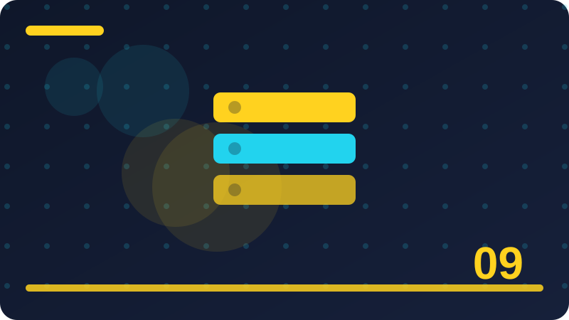

Chapter 9: Training, Validation and Test Sets

Section 1: Three Jobs, Three Sets of Data
This section is about three jobs, three sets of data, and it belongs in this chapter because it helps you understand how a small program learns from examples and makes guesses you can check. Imagine you are teaching a friend to do three jobs, three sets of data by showing examples only, with no extra hints, and notice how quickly your friend needs clear rules and honest feedback. A concrete toy case for three jobs, three sets of data could use a short list you write yourself, such as a few labelled items or a few numbers, so every step stays visible and easy to repeat. Think of three jobs, three sets of data as a habit your program learns from examples, rather than a magic trick, because every prediction it makes comes from patterns it has already seen in data you gave it.
A good way to picture three jobs, three sets of data is to imagine sorting objects on a table by hand, noticing what you look at, what you ignore, and how you change your mind when a new object does not fit neatly. Beginners often rush past three jobs, three sets of data, but taking time here pays off later, since almost every confusing result in a small project can be traced back to this one idea being unclear. When you work with three jobs, three sets of data on your own machine, you stay in control, because you choose the examples, you can inspect every result, and nothing leaves your computer or costs money. The key question behind three jobs, three sets of data is simple to ask, even when the answer takes practice, and that question is what pattern, if any, is really present in the examples in front of you.
People sometimes describe three jobs, three sets of data with impressive words, yet the plain meaning stays the same, which is that a program looks at past examples and uses them to make a reasonable guess about a new case. To learn three jobs, three sets of data well, try saying it back in your own words before you touch any code, because if you cannot explain it to a friend, the code will only hide the confusion for a while. A toy example makes three jobs, three sets of data concrete, so imagine only a handful of examples, small enough to check by hand, and ask what a sensible person would guess before asking what a program should guess. One common mistake with three jobs, three sets of data is to expect perfection, but real data is messy, people disagree about labels, and a useful model is often one that is right most of the time, not every time.
Another common mistake is to judge three jobs, three sets of data from a single example, because one lucky or unlucky case tells you almost nothing, while a group of checked examples tells you a great deal.
# Tiny local toy example for three jobs, three sets of data
examples = [("example one", 1), ("example two", 0), ("example three", 1)]
for name, label in examples:
print(name, "->", label)
print("Count:", len(examples))Check: In your own words, what does three jobs, three sets of data mean, and what is one small example that shows it?
Section 2: Training: Where the Model Learns
This section is about training: where the model learns, and it belongs in this chapter because it helps you understand how a small program learns from examples and makes guesses you can check. Imagine you are teaching a friend to do training: where the model learns by showing examples only, with no extra hints, and notice how quickly your friend needs clear rules and honest feedback. A concrete toy case for training: where the model learns could use a short list you write yourself, such as a few labelled items or a few numbers, so every step stays visible and easy to repeat. A good way to picture training: where the model learns is to imagine sorting objects on a table by hand, noticing what you look at, what you ignore, and how you change your mind when a new object does not fit neatly.
Beginners often rush past training: where the model learns, but taking time here pays off later, since almost every confusing result in a small project can be traced back to this one idea being unclear. When you work with training: where the model learns on your own machine, you stay in control, because you choose the examples, you can inspect every result, and nothing leaves your computer or costs money. The key question behind training: where the model learns is simple to ask, even when the answer takes practice, and that question is what pattern, if any, is really present in the examples in front of you. People sometimes describe training: where the model learns with impressive words, yet the plain meaning stays the same, which is that a program looks at past examples and uses them to make a reasonable guess about a new case.
To learn training: where the model learns well, try saying it back in your own words before you touch any code, because if you cannot explain it to a friend, the code will only hide the confusion for a while. A toy example makes training: where the model learns concrete, so imagine only a handful of examples, small enough to check by hand, and ask what a sensible person would guess before asking what a program should guess. One common mistake with training: where the model learns is to expect perfection, but real data is messy, people disagree about labels, and a useful model is often one that is right most of the time, not every time. Another common mistake is to judge training: where the model learns from a single example, because one lucky or unlucky case tells you almost nothing, while a group of checked examples tells you a great deal.
When you test training: where the model learns, keep your checking examples separate from your learning examples whenever you can, so your score measures learning rather than memory of answers already seen. The code in this section is deliberately tiny and uses only the Python standard library, which means you can run it, change one number, run it again, and watch exactly what changes.
# Tiny local toy example for training: where the model learns
examples = [("example one", 1), ("example two", 0), ("example three", 1)]
for name, label in examples:
print(name, "->", label)
print("Count:", len(examples))Check: In your own words, what does training: where the model learns mean, and what is one small example that shows it?
Section 3: Validation: Where You Make Choices
This section is about validation: where you make choices, and it belongs in this chapter because it helps you understand how a small program learns from examples and makes guesses you can check. Imagine you are teaching a friend to do validation: where you make choices by showing examples only, with no extra hints, and notice how quickly your friend needs clear rules and honest feedback. A concrete toy case for validation: where you make choices could use a short list you write yourself, such as a few labelled items or a few numbers, so every step stays visible and easy to repeat. Beginners often rush past validation: where you make choices, but taking time here pays off later, since almost every confusing result in a small project can be traced back to this one idea being unclear.
When you work with validation: where you make choices on your own machine, you stay in control, because you choose the examples, you can inspect every result, and nothing leaves your computer or costs money. The key question behind validation: where you make choices is simple to ask, even when the answer takes practice, and that question is what pattern, if any, is really present in the examples in front of you. People sometimes describe validation: where you make choices with impressive words, yet the plain meaning stays the same, which is that a program looks at past examples and uses them to make a reasonable guess about a new case. To learn validation: where you make choices well, try saying it back in your own words before you touch any code, because if you cannot explain it to a friend, the code will only hide the confusion for a while.
A toy example makes validation: where you make choices concrete, so imagine only a handful of examples, small enough to check by hand, and ask what a sensible person would guess before asking what a program should guess. One common mistake with validation: where you make choices is to expect perfection, but real data is messy, people disagree about labels, and a useful model is often one that is right most of the time, not every time. Another common mistake is to judge validation: where you make choices from a single example, because one lucky or unlucky case tells you almost nothing, while a group of checked examples tells you a great deal. When you test validation: where you make choices, keep your checking examples separate from your learning examples whenever you can, so your score measures learning rather than memory of answers already seen.
The code in this section is deliberately tiny and uses only the Python standard library, which means you can run it, change one number, run it again, and watch exactly what changes. Reading code about validation: where you make choices is useful, but changing it is better, so after you run the example, try a different input, a strange input, and an input that should confuse the program, then note what happens.
# Tiny local toy example for validation: where you make choices
examples = [("example one", 1), ("example two", 0), ("example three", 1)]
for name, label in examples:
print(name, "->", label)
print("Count:", len(examples))Check: In your own words, what does validation: where you make choices mean, and what is one small example that shows it?
Section 4: Test: The Final Honest Exam
This section is about test: the final honest exam, and it belongs in this chapter because it helps you understand how a small program learns from examples and makes guesses you can check. Imagine you are teaching a friend to do test: the final honest exam by showing examples only, with no extra hints, and notice how quickly your friend needs clear rules and honest feedback. A concrete toy case for test: the final honest exam could use a short list you write yourself, such as a few labelled items or a few numbers, so every step stays visible and easy to repeat. When you work with test: the final honest exam on your own machine, you stay in control, because you choose the examples, you can inspect every result, and nothing leaves your computer or costs money.
The key question behind test: the final honest exam is simple to ask, even when the answer takes practice, and that question is what pattern, if any, is really present in the examples in front of you. People sometimes describe test: the final honest exam with impressive words, yet the plain meaning stays the same, which is that a program looks at past examples and uses them to make a reasonable guess about a new case. To learn test: the final honest exam well, try saying it back in your own words before you touch any code, because if you cannot explain it to a friend, the code will only hide the confusion for a while. A toy example makes test: the final honest exam concrete, so imagine only a handful of examples, small enough to check by hand, and ask what a sensible person would guess before asking what a program should guess.
One common mistake with test: the final honest exam is to expect perfection, but real data is messy, people disagree about labels, and a useful model is often one that is right most of the time, not every time. Another common mistake is to judge test: the final honest exam from a single example, because one lucky or unlucky case tells you almost nothing, while a group of checked examples tells you a great deal. When you test test: the final honest exam, keep your checking examples separate from your learning examples whenever you can, so your score measures learning rather than memory of answers already seen. The code in this section is deliberately tiny and uses only the Python standard library, which means you can run it, change one number, run it again, and watch exactly what changes.
Reading code about test: the final honest exam is useful, but changing it is better, so after you run the example, try a different input, a strange input, and an input that should confuse the program, then note what happens. If a result surprises you while you explore test: the final honest exam, treat that surprise as information, not failure, because surprising results usually point to a hidden assumption in your examples or your rules.
# Tiny local toy example for test: the final honest exam
examples = [("example one", 1), ("example two", 0), ("example three", 1)]
for name, label in examples:
print(name, "->", label)
print("Count:", len(examples))Check: In your own words, what does test: the final honest exam mean, and what is one small example that shows it?
Section 5: Why You Cannot Reuse the Test
This section is about why you cannot reuse the test, and it belongs in this chapter because it helps you understand how a small program learns from examples and makes guesses you can check. Imagine you are teaching a friend to do why you cannot reuse the test by showing examples only, with no extra hints, and notice how quickly your friend needs clear rules and honest feedback. A concrete toy case for why you cannot reuse the test could use a short list you write yourself, such as a few labelled items or a few numbers, so every step stays visible and easy to repeat. The key question behind why you cannot reuse the test is simple to ask, even when the answer takes practice, and that question is what pattern, if any, is really present in the examples in front of you.
People sometimes describe why you cannot reuse the test with impressive words, yet the plain meaning stays the same, which is that a program looks at past examples and uses them to make a reasonable guess about a new case. To learn why you cannot reuse the test well, try saying it back in your own words before you touch any code, because if you cannot explain it to a friend, the code will only hide the confusion for a while. A toy example makes why you cannot reuse the test concrete, so imagine only a handful of examples, small enough to check by hand, and ask what a sensible person would guess before asking what a program should guess.
One common mistake with why you cannot reuse the test is to expect perfection, but real data is messy, people disagree about labels, and a useful model is often one that is right most of the time, not every time. Another common mistake is to judge why you cannot reuse the test from a single example, because one lucky or unlucky case tells you almost nothing, while a group of checked examples tells you a great deal. When you test why you cannot reuse the test, keep your checking examples separate from your learning examples whenever you can, so your score measures learning rather than memory of answers already seen. The code in this section is deliberately tiny and uses only the Python standard library, which means you can run it, change one number, run it again, and watch exactly what changes.
Reading code about why you cannot reuse the test is useful, but changing it is better, so after you run the example, try a different input, a strange input, and an input that should confuse the program, then note what happens. If a result surprises you while you explore why you cannot reuse the test, treat that surprise as information, not failure, because surprising results usually point to a hidden assumption in your examples or your rules.
# Tiny local toy example for why you cannot reuse the test
examples = [("example one", 1), ("example two", 0), ("example three", 1)]
for name, label in examples:
print(name, "->", label)
print("Count:", len(examples))Check: In your own words, what does why you cannot reuse the test mean, and what is one small example that shows it?
Section 6: Splitting Data Fairly
This section is about splitting data fairly, and it belongs in this chapter because it helps you understand how a small program learns from examples and makes guesses you can check. Imagine you are teaching a friend to do splitting data fairly by showing examples only, with no extra hints, and notice how quickly your friend needs clear rules and honest feedback. A concrete toy case for splitting data fairly could use a short list you write yourself, such as a few labelled items or a few numbers, so every step stays visible and easy to repeat. People sometimes describe splitting data fairly with impressive words, yet the plain meaning stays the same, which is that a program looks at past examples and uses them to make a reasonable guess about a new case.
To learn splitting data fairly well, try saying it back in your own words before you touch any code, because if you cannot explain it to a friend, the code will only hide the confusion for a while. A toy example makes splitting data fairly concrete, so imagine only a handful of examples, small enough to check by hand, and ask what a sensible person would guess before asking what a program should guess. One common mistake with splitting data fairly is to expect perfection, but real data is messy, people disagree about labels, and a useful model is often one that is right most of the time, not every time. Another common mistake is to judge splitting data fairly from a single example, because one lucky or unlucky case tells you almost nothing, while a group of checked examples tells you a great deal.
When you test splitting data fairly, keep your checking examples separate from your learning examples whenever you can, so your score measures learning rather than memory of answers already seen. The code in this section is deliberately tiny and uses only the Python standard library, which means you can run it, change one number, run it again, and watch exactly what changes. Reading code about splitting data fairly is useful, but changing it is better, so after you run the example, try a different input, a strange input, and an input that should confuse the program, then note what happens. If a result surprises you while you explore splitting data fairly, treat that surprise as information, not failure, because surprising results usually point to a hidden assumption in your examples or your rules.
A calm habit for splitting data fairly is to write down what you expected before you run anything, then compare that expectation with the actual result, and then explain any difference in one plain sentence. Many learners find splitting data fairly easier when they draw it first, so sketch the groups, the numbers, or the split on paper, even roughly, before you try to describe the same idea in code.
# Tiny local toy example for splitting data fairly
examples = [("example one", 1), ("example two", 0), ("example three", 1)]
for name, label in examples:
print(name, "->", label)
print("Count:", len(examples))Check: In your own words, what does splitting data fairly mean, and what is one small example that shows it?
Section 7: The Common Split Sizes
This section is about the common split sizes, and it belongs in this chapter because it helps you understand how a small program learns from examples and makes guesses you can check. Imagine you are teaching a friend to do the common split sizes by showing examples only, with no extra hints, and notice how quickly your friend needs clear rules and honest feedback. A concrete toy case for the common split sizes could use a short list you write yourself, such as a few labelled items or a few numbers, so every step stays visible and easy to repeat. To learn the common split sizes well, try saying it back in your own words before you touch any code, because if you cannot explain it to a friend, the code will only hide the confusion for a while.
A toy example makes the common split sizes concrete, so imagine only a handful of examples, small enough to check by hand, and ask what a sensible person would guess before asking what a program should guess. One common mistake with the common split sizes is to expect perfection, but real data is messy, people disagree about labels, and a useful model is often one that is right most of the time, not every time. Another common mistake is to judge the common split sizes from a single example, because one lucky or unlucky case tells you almost nothing, while a group of checked examples tells you a great deal. When you test the common split sizes, keep your checking examples separate from your learning examples whenever you can, so your score measures learning rather than memory of answers already seen.
The code in this section is deliberately tiny and uses only the Python standard library, which means you can run it, change one number, run it again, and watch exactly what changes. Reading code about the common split sizes is useful, but changing it is better, so after you run the example, try a different input, a strange input, and an input that should confuse the program, then note what happens. If a result surprises you while you explore the common split sizes, treat that surprise as information, not failure, because surprising results usually point to a hidden assumption in your examples or your rules. A calm habit for the common split sizes is to write down what you expected before you run anything, then compare that expectation with the actual result, and then explain any difference in one plain sentence.
Many learners find the common split sizes easier when they draw it first, so sketch the groups, the numbers, or the split on paper, even roughly, before you try to describe the same idea in code. Notice how the common split sizes connects to the previous section, because learning builds in layers, and each new idea either sharpens an old rule, adds a check, or warns you about a trap you might otherwise miss.
# Tiny local toy example for the common split sizes
examples = [("example one", 1), ("example two", 0), ("example three", 1)]
for name, label in examples:
print(name, "->", label)
print("Count:", len(examples))Check: In your own words, what does the common split sizes mean, and what is one small example that shows it?
Section 8: Random Splits and Why They Help
This section is about random splits and why they help, and it belongs in this chapter because it helps you understand how a small program learns from examples and makes guesses you can check. Imagine you are teaching a friend to do random splits and why they help by showing examples only, with no extra hints, and notice how quickly your friend needs clear rules and honest feedback. A concrete toy case for random splits and why they help could use a short list you write yourself, such as a few labelled items or a few numbers, so every step stays visible and easy to repeat. A toy example makes random splits and why they help concrete, so imagine only a handful of examples, small enough to check by hand, and ask what a sensible person would guess before asking what a program should guess.
One common mistake with random splits and why they help is to expect perfection, but real data is messy, people disagree about labels, and a useful model is often one that is right most of the time, not every time. Another common mistake is to judge random splits and why they help from a single example, because one lucky or unlucky case tells you almost nothing, while a group of checked examples tells you a great deal. When you test random splits and why they help, keep your checking examples separate from your learning examples whenever you can, so your score measures learning rather than memory of answers already seen. The code in this section is deliberately tiny and uses only the Python standard library, which means you can run it, change one number, run it again, and watch exactly what changes.
Reading code about random splits and why they help is useful, but changing it is better, so after you run the example, try a different input, a strange input, and an input that should confuse the program, then note what happens. If a result surprises you while you explore random splits and why they help, treat that surprise as information, not failure, because surprising results usually point to a hidden assumption in your examples or your rules. A calm habit for random splits and why they help is to write down what you expected before you run anything, then compare that expectation with the actual result, and then explain any difference in one plain sentence. Many learners find random splits and why they help easier when they draw it first, so sketch the groups, the numbers, or the split on paper, even roughly, before you try to describe the same idea in code.
Notice how random splits and why they help connects to the previous section, because learning builds in layers, and each new idea either sharpens an old rule, adds a check, or warns you about a trap you might otherwise miss.
# Tiny local toy example for random splits and why they help
examples = [("example one", 1), ("example two", 0), ("example three", 1)]
for name, label in examples:
print(name, "->", label)
print("Count:", len(examples))Check: In your own words, what does random splits and why they help mean, and what is one small example that shows it?
Section 9: Stratified Splits for Lopsided Groups
This section is about stratified splits for lopsided groups, and it belongs in this chapter because it helps you understand how a small program learns from examples and makes guesses you can check. Imagine you are teaching a friend to do stratified splits for lopsided groups by showing examples only, with no extra hints, and notice how quickly your friend needs clear rules and honest feedback. A concrete toy case for stratified splits for lopsided groups could use a short list you write yourself, such as a few labelled items or a few numbers, so every step stays visible and easy to repeat. One common mistake with stratified splits for lopsided groups is to expect perfection, but real data is messy, people disagree about labels, and a useful model is often one that is right most of the time, not every time.
Another common mistake is to judge stratified splits for lopsided groups from a single example, because one lucky or unlucky case tells you almost nothing, while a group of checked examples tells you a great deal. When you test stratified splits for lopsided groups, keep your checking examples separate from your learning examples whenever you can, so your score measures learning rather than memory of answers already seen. The code in this section is deliberately tiny and uses only the Python standard library, which means you can run it, change one number, run it again, and watch exactly what changes. Reading code about stratified splits for lopsided groups is useful, but changing it is better, so after you run the example, try a different input, a strange input, and an input that should confuse the program, then note what happens.
If a result surprises you while you explore stratified splits for lopsided groups, treat that surprise as information, not failure, because surprising results usually point to a hidden assumption in your examples or your rules. A calm habit for stratified splits for lopsided groups is to write down what you expected before you run anything, then compare that expectation with the actual result, and then explain any difference in one plain sentence. Many learners find stratified splits for lopsided groups easier when they draw it first, so sketch the groups, the numbers, or the split on paper, even roughly, before you try to describe the same idea in code. Notice how stratified splits for lopsided groups connects to the previous section, because learning builds in layers, and each new idea either sharpens an old rule, adds a check, or warns you about a trap you might otherwise miss.
You do not need a large data set to understand stratified splits for lopsided groups, and in fact a small set you fully understand teaches more than a huge set you never inspect, since you can trace every decision by hand. When you explain stratified splits for lopsided groups to someone else, use their world first, such as cooking, sport, school, or shopping, and only afterwards translate that everyday picture back into the language of data and models.
# Tiny local toy example for stratified splits for lopsided groups
examples = [("example one", 1), ("example two", 0), ("example three", 1)]
for name, label in examples:
print(name, "->", label)
print("Count:", len(examples))Check: In your own words, what does stratified splits for lopsided groups mean, and what is one small example that shows it?
Section 10: Shuffling Before You Split
This section is about shuffling before you split, and it belongs in this chapter because it helps you understand how a small program learns from examples and makes guesses you can check. Imagine you are teaching a friend to do shuffling before you split by showing examples only, with no extra hints, and notice how quickly your friend needs clear rules and honest feedback. A concrete toy case for shuffling before you split could use a short list you write yourself, such as a few labelled items or a few numbers, so every step stays visible and easy to repeat. Another common mistake is to judge shuffling before you split from a single example, because one lucky or unlucky case tells you almost nothing, while a group of checked examples tells you a great deal.
When you test shuffling before you split, keep your checking examples separate from your learning examples whenever you can, so your score measures learning rather than memory of answers already seen. The code in this section is deliberately tiny and uses only the Python standard library, which means you can run it, change one number, run it again, and watch exactly what changes. Reading code about shuffling before you split is useful, but changing it is better, so after you run the example, try a different input, a strange input, and an input that should confuse the program, then note what happens. If a result surprises you while you explore shuffling before you split, treat that surprise as information, not failure, because surprising results usually point to a hidden assumption in your examples or your rules.
A calm habit for shuffling before you split is to write down what you expected before you run anything, then compare that expectation with the actual result, and then explain any difference in one plain sentence. Many learners find shuffling before you split easier when they draw it first, so sketch the groups, the numbers, or the split on paper, even roughly, before you try to describe the same idea in code. Notice how shuffling before you split connects to the previous section, because learning builds in layers, and each new idea either sharpens an old rule, adds a check, or warns you about a trap you might otherwise miss. You do not need a large data set to understand shuffling before you split, and in fact a small set you fully understand teaches more than a huge set you never inspect, since you can trace every decision by hand.
When you explain shuffling before you split to someone else, use their world first, such as cooking, sport, school, or shopping, and only afterwards translate that everyday picture back into the language of data and models. A useful test for shuffling before you split is to ask what would happen if the data changed slightly, because a solid idea stays sensible under small changes, while a fragile idea falls apart at the first surprise.
# Tiny local toy example for shuffling before you split
examples = [("example one", 1), ("example two", 0), ("example three", 1)]
for name, label in examples:
print(name, "->", label)
print("Count:", len(examples))Check: In your own words, what does shuffling before you split mean, and what is one small example that shows it?
Section 11: Time Order Changes the Split
This section is about time order changes the split, and it belongs in this chapter because it helps you understand how a small program learns from examples and makes guesses you can check. Imagine you are teaching a friend to do time order changes the split by showing examples only, with no extra hints, and notice how quickly your friend needs clear rules and honest feedback. A concrete toy case for time order changes the split could use a short list you write yourself, such as a few labelled items or a few numbers, so every step stays visible and easy to repeat. When you test time order changes the split, keep your checking examples separate from your learning examples whenever you can, so your score measures learning rather than memory of answers already seen.
The code in this section is deliberately tiny and uses only the Python standard library, which means you can run it, change one number, run it again, and watch exactly what changes. Reading code about time order changes the split is useful, but changing it is better, so after you run the example, try a different input, a strange input, and an input that should confuse the program, then note what happens. If a result surprises you while you explore time order changes the split, treat that surprise as information, not failure, because surprising results usually point to a hidden assumption in your examples or your rules. A calm habit for time order changes the split is to write down what you expected before you run anything, then compare that expectation with the actual result, and then explain any difference in one plain sentence.
Many learners find time order changes the split easier when they draw it first, so sketch the groups, the numbers, or the split on paper, even roughly, before you try to describe the same idea in code. Notice how time order changes the split connects to the previous section, because learning builds in layers, and each new idea either sharpens an old rule, adds a check, or warns you about a trap you might otherwise miss. You do not need a large data set to understand time order changes the split, and in fact a small set you fully understand teaches more than a huge set you never inspect, since you can trace every decision by hand. When you explain time order changes the split to someone else, use their world first, such as cooking, sport, school, or shopping, and only afterwards translate that everyday picture back into the language of data and models.
A useful test for time order changes the split is to ask what would happen if the data changed slightly, because a solid idea stays sensible under small changes, while a fragile idea falls apart at the first surprise. Keep your notes about time order changes the split short and practical, recording the definition in one sentence, one example that worked, one example that failed, and one question you still want to answer.
# Tiny local toy example for time order changes the split
examples = [("example one", 1), ("example two", 0), ("example three", 1)]
for name, label in examples:
print(name, "->", label)
print("Count:", len(examples))Check: In your own words, what does time order changes the split mean, and what is one small example that shows it?
Section 12: Splitting by Person, Not Just by Row
This section is about splitting by person, not just by row, and it belongs in this chapter because it helps you understand how a small program learns from examples and makes guesses you can check. Imagine you are teaching a friend to do splitting by person, not just by row by showing examples only, with no extra hints, and notice how quickly your friend needs clear rules and honest feedback. A concrete toy case for splitting by person, not just by row could use a short list you write yourself, such as a few labelled items or a few numbers, so every step stays visible and easy to repeat. The code in this section is deliberately tiny and uses only the Python standard library, which means you can run it, change one number, run it again, and watch exactly what changes.
Reading code about splitting by person, not just by row is useful, but changing it is better, so after you run the example, try a different input, a strange input, and an input that should confuse the program, then note what happens. If a result surprises you while you explore splitting by person, not just by row, treat that surprise as information, not failure, because surprising results usually point to a hidden assumption in your examples or your rules. A calm habit for splitting by person, not just by row is to write down what you expected before you run anything, then compare that expectation with the actual result, and then explain any difference in one plain sentence. Many learners find splitting by person, not just by row easier when they draw it first, so sketch the groups, the numbers, or the split on paper, even roughly, before you try to describe the same idea in code.
Notice how splitting by person, not just by row connects to the previous section, because learning builds in layers, and each new idea either sharpens an old rule, adds a check, or warns you about a trap you might otherwise miss. You do not need a large data set to understand splitting by person, not just by row, and in fact a small set you fully understand teaches more than a huge set you never inspect, since you can trace every decision by hand. When you explain splitting by person, not just by row to someone else, use their world first, such as cooking, sport, school, or shopping, and only afterwards translate that everyday picture back into the language of data and models. A useful test for splitting by person, not just by row is to ask what would happen if the data changed slightly, because a solid idea stays sensible under small changes, while a fragile idea falls apart at the first surprise.
Keep your notes about splitting by person, not just by row short and practical, recording the definition in one sentence, one example that worked, one example that failed, and one question you still want to answer.
# Tiny local toy example for splitting by person, not just by row
examples = [("example one", 1), ("example two", 0), ("example three", 1)]
for name, label in examples:
print(name, "->", label)
print("Count:", len(examples))Check: In your own words, what does splitting by person, not just by row mean, and what is one small example that shows it?
Section 13: Splitting by Group to Avoid Leaks
This section is about splitting by group to avoid leaks, and it belongs in this chapter because it helps you understand how a small program learns from examples and makes guesses you can check. Imagine you are teaching a friend to do splitting by group to avoid leaks by showing examples only, with no extra hints, and notice how quickly your friend needs clear rules and honest feedback. A concrete toy case for splitting by group to avoid leaks could use a short list you write yourself, such as a few labelled items or a few numbers, so every step stays visible and easy to repeat. Reading code about splitting by group to avoid leaks is useful, but changing it is better, so after you run the example, try a different input, a strange input, and an input that should confuse the program, then note what happens.
If a result surprises you while you explore splitting by group to avoid leaks, treat that surprise as information, not failure, because surprising results usually point to a hidden assumption in your examples or your rules. A calm habit for splitting by group to avoid leaks is to write down what you expected before you run anything, then compare that expectation with the actual result, and then explain any difference in one plain sentence. Many learners find splitting by group to avoid leaks easier when they draw it first, so sketch the groups, the numbers, or the split on paper, even roughly, before you try to describe the same idea in code. Notice how splitting by group to avoid leaks connects to the previous section, because learning builds in layers, and each new idea either sharpens an old rule, adds a check, or warns you about a trap you might otherwise miss.
You do not need a large data set to understand splitting by group to avoid leaks, and in fact a small set you fully understand teaches more than a huge set you never inspect, since you can trace every decision by hand. When you explain splitting by group to avoid leaks to someone else, use their world first, such as cooking, sport, school, or shopping, and only afterwards translate that everyday picture back into the language of data and models. A useful test for splitting by group to avoid leaks is to ask what would happen if the data changed slightly, because a solid idea stays sensible under small changes, while a fragile idea falls apart at the first surprise. Keep your notes about splitting by group to avoid leaks short and practical, recording the definition in one sentence, one example that worked, one example that failed, and one question you still want to answer.
The difference between knowing about splitting by group to avoid leaks and being able to use it is practice, so the small exercises at the end of this section matter more than reading the same explanation a second time.
# Tiny local toy example for splitting by group to avoid leaks
examples = [("example one", 1), ("example two", 0), ("example three", 1)]
for name, label in examples:
print(name, "->", label)
print("Count:", len(examples))Check: In your own words, what does splitting by group to avoid leaks mean, and what is one small example that shows it?
Section 14: When Your Data Set Is Tiny
This section is about when your data set is tiny, and it belongs in this chapter because it helps you understand how a small program learns from examples and makes guesses you can check. Imagine you are teaching a friend to do when your data set is tiny by showing examples only, with no extra hints, and notice how quickly your friend needs clear rules and honest feedback. A concrete toy case for when your data set is tiny could use a short list you write yourself, such as a few labelled items or a few numbers, so every step stays visible and easy to repeat. If a result surprises you while you explore when your data set is tiny, treat that surprise as information, not failure, because surprising results usually point to a hidden assumption in your examples or your rules.
A calm habit for when your data set is tiny is to write down what you expected before you run anything, then compare that expectation with the actual result, and then explain any difference in one plain sentence. Many learners find when your data set is tiny easier when they draw it first, so sketch the groups, the numbers, or the split on paper, even roughly, before you try to describe the same idea in code. Notice how when your data set is tiny connects to the previous section, because learning builds in layers, and each new idea either sharpens an old rule, adds a check, or warns you about a trap you might otherwise miss. You do not need a large data set to understand when your data set is tiny, and in fact a small set you fully understand teaches more than a huge set you never inspect, since you can trace every decision by hand.
When you explain when your data set is tiny to someone else, use their world first, such as cooking, sport, school, or shopping, and only afterwards translate that everyday picture back into the language of data and models. A useful test for when your data set is tiny is to ask what would happen if the data changed slightly, because a solid idea stays sensible under small changes, while a fragile idea falls apart at the first surprise. Keep your notes about when your data set is tiny short and practical, recording the definition in one sentence, one example that worked, one example that failed, and one question you still want to answer. The difference between knowing about when your data set is tiny and being able to use it is practice, so the small exercises at the end of this section matter more than reading the same explanation a second time.
If you feel stuck on when your data set is tiny, shrink the problem until it feels easy again, using fewer examples, fewer inputs, or a simpler rule, and then grow it back step by step until the difficulty returns.
# Tiny local toy example for when your data set is tiny
examples = [("example one", 1), ("example two", 0), ("example three", 1)]
for name, label in examples:
print(name, "->", label)
print("Count:", len(examples))Check: In your own words, what does when your data set is tiny mean, and what is one small example that shows it?
Section 15: When Your Data Set Is Huge
This section is about when your data set is huge, and it belongs in this chapter because it helps you understand how a small program learns from examples and makes guesses you can check. Imagine you are teaching a friend to do when your data set is huge by showing examples only, with no extra hints, and notice how quickly your friend needs clear rules and honest feedback. A concrete toy case for when your data set is huge could use a short list you write yourself, such as a few labelled items or a few numbers, so every step stays visible and easy to repeat. A calm habit for when your data set is huge is to write down what you expected before you run anything, then compare that expectation with the actual result, and then explain any difference in one plain sentence.
Many learners find when your data set is huge easier when they draw it first, so sketch the groups, the numbers, or the split on paper, even roughly, before you try to describe the same idea in code. Notice how when your data set is huge connects to the previous section, because learning builds in layers, and each new idea either sharpens an old rule, adds a check, or warns you about a trap you might otherwise miss. You do not need a large data set to understand when your data set is huge, and in fact a small set you fully understand teaches more than a huge set you never inspect, since you can trace every decision by hand. When you explain when your data set is huge to someone else, use their world first, such as cooking, sport, school, or shopping, and only afterwards translate that everyday picture back into the language of data and models.
A useful test for when your data set is huge is to ask what would happen if the data changed slightly, because a solid idea stays sensible under small changes, while a fragile idea falls apart at the first surprise. Keep your notes about when your data set is huge short and practical, recording the definition in one sentence, one example that worked, one example that failed, and one question you still want to answer. The difference between knowing about when your data set is huge and being able to use it is practice, so the small exercises at the end of this section matter more than reading the same explanation a second time. If you feel stuck on when your data set is huge, shrink the problem until it feels easy again, using fewer examples, fewer inputs, or a simpler rule, and then grow it back step by step until the difficulty returns.
A program that handles when your data set is huge well is usually boring in a good way, because it behaves predictably, it fails in ways you can explain, and it does not pretend to know more than its examples support.
# Tiny local toy example for when your data set is huge
examples = [("example one", 1), ("example two", 0), ("example three", 1)]
for name, label in examples:
print(name, "->", label)
print("Count:", len(examples))Check: In your own words, what does when your data set is huge mean, and what is one small example that shows it?
Section 16: Cross-Validation in Plain Words
This section is about cross-validation in plain words, and it belongs in this chapter because it helps you understand how a small program learns from examples and makes guesses you can check. Imagine you are teaching a friend to do cross-validation in plain words by showing examples only, with no extra hints, and notice how quickly your friend needs clear rules and honest feedback. A concrete toy case for cross-validation in plain words could use a short list you write yourself, such as a few labelled items or a few numbers, so every step stays visible and easy to repeat. Many learners find cross-validation in plain words easier when they draw it first, so sketch the groups, the numbers, or the split on paper, even roughly, before you try to describe the same idea in code.
Notice how cross-validation in plain words connects to the previous section, because learning builds in layers, and each new idea either sharpens an old rule, adds a check, or warns you about a trap you might otherwise miss. You do not need a large data set to understand cross-validation in plain words, and in fact a small set you fully understand teaches more than a huge set you never inspect, since you can trace every decision by hand. When you explain cross-validation in plain words to someone else, use their world first, such as cooking, sport, school, or shopping, and only afterwards translate that everyday picture back into the language of data and models. A useful test for cross-validation in plain words is to ask what would happen if the data changed slightly, because a solid idea stays sensible under small changes, while a fragile idea falls apart at the first surprise.
Keep your notes about cross-validation in plain words short and practical, recording the definition in one sentence, one example that worked, one example that failed, and one question you still want to answer. The difference between knowing about cross-validation in plain words and being able to use it is practice, so the small exercises at the end of this section matter more than reading the same explanation a second time. If you feel stuck on cross-validation in plain words, shrink the problem until it feels easy again, using fewer examples, fewer inputs, or a simpler rule, and then grow it back step by step until the difficulty returns. A program that handles cross-validation in plain words well is usually boring in a good way, because it behaves predictably, it fails in ways you can explain, and it does not pretend to know more than its examples support.
Remember that cross-validation in plain words is a tool for helping people decide, not a replacement for judgement, so a sensible builder always leaves room for a person to check, correct, or overrule the result. Before you move on from cross-validation in plain words, check that you can name one situation where it helps, one situation where it misleads, and one simple check you would run before trusting its output.
# Tiny local toy example for cross-validation in plain words
examples = [("example one", 1), ("example two", 0), ("example three", 1)]
for name, label in examples:
print(name, "->", label)
print("Count:", len(examples))Check: In your own words, what does cross-validation in plain words mean, and what is one small example that shows it?
Section 17: Folds: Slices of Your Data
This section is about folds: slices of your data, and it belongs in this chapter because it helps you understand how a small program learns from examples and makes guesses you can check. Imagine you are teaching a friend to do folds: slices of your data by showing examples only, with no extra hints, and notice how quickly your friend needs clear rules and honest feedback. A concrete toy case for folds: slices of your data could use a short list you write yourself, such as a few labelled items or a few numbers, so every step stays visible and easy to repeat. Notice how folds: slices of your data connects to the previous section, because learning builds in layers, and each new idea either sharpens an old rule, adds a check, or warns you about a trap you might otherwise miss.
You do not need a large data set to understand folds: slices of your data, and in fact a small set you fully understand teaches more than a huge set you never inspect, since you can trace every decision by hand. When you explain folds: slices of your data to someone else, use their world first, such as cooking, sport, school, or shopping, and only afterwards translate that everyday picture back into the language of data and models. A useful test for folds: slices of your data is to ask what would happen if the data changed slightly, because a solid idea stays sensible under small changes, while a fragile idea falls apart at the first surprise. Keep your notes about folds: slices of your data short and practical, recording the definition in one sentence, one example that worked, one example that failed, and one question you still want to answer.
The difference between knowing about folds: slices of your data and being able to use it is practice, so the small exercises at the end of this section matter more than reading the same explanation a second time. If you feel stuck on folds: slices of your data, shrink the problem until it feels easy again, using fewer examples, fewer inputs, or a simpler rule, and then grow it back step by step until the difficulty returns. A program that handles folds: slices of your data well is usually boring in a good way, because it behaves predictably, it fails in ways you can explain, and it does not pretend to know more than its examples support. Remember that folds: slices of your data is a tool for helping people decide, not a replacement for judgement, so a sensible builder always leaves room for a person to check, correct, or overrule the result.
Before you move on from folds: slices of your data, check that you can name one situation where it helps, one situation where it misleads, and one simple check you would run before trusting its output.
# Tiny local toy example for folds: slices of your data
examples = [("example one", 1), ("example two", 0), ("example three", 1)]
for name, label in examples:
print(name, "->", label)
print("Count:", len(examples))Check: In your own words, what does folds: slices of your data mean, and what is one small example that shows it?
Section 18: Training and Checking on Each Fold
This section is about training and checking on each fold, and it belongs in this chapter because it helps you understand how a small program learns from examples and makes guesses you can check. Imagine you are teaching a friend to do training and checking on each fold by showing examples only, with no extra hints, and notice how quickly your friend needs clear rules and honest feedback. A concrete toy case for training and checking on each fold could use a short list you write yourself, such as a few labelled items or a few numbers, so every step stays visible and easy to repeat. You do not need a large data set to understand training and checking on each fold, and in fact a small set you fully understand teaches more than a huge set you never inspect, since you can trace every decision by hand.
When you explain training and checking on each fold to someone else, use their world first, such as cooking, sport, school, or shopping, and only afterwards translate that everyday picture back into the language of data and models. A useful test for training and checking on each fold is to ask what would happen if the data changed slightly, because a solid idea stays sensible under small changes, while a fragile idea falls apart at the first surprise. Keep your notes about training and checking on each fold short and practical, recording the definition in one sentence, one example that worked, one example that failed, and one question you still want to answer. The difference between knowing about training and checking on each fold and being able to use it is practice, so the small exercises at the end of this section matter more than reading the same explanation a second time.
If you feel stuck on training and checking on each fold, shrink the problem until it feels easy again, using fewer examples, fewer inputs, or a simpler rule, and then grow it back step by step until the difficulty returns. A program that handles training and checking on each fold well is usually boring in a good way, because it behaves predictably, it fails in ways you can explain, and it does not pretend to know more than its examples support. Remember that training and checking on each fold is a tool for helping people decide, not a replacement for judgement, so a sensible builder always leaves room for a person to check, correct, or overrule the result. Before you move on from training and checking on each fold, check that you can name one situation where it helps, one situation where it misleads, and one simple check you would run before trusting its output.
The examples in this section use invented toy data on purpose, so you can focus on the idea itself without worrying about private information, licences, or the cost of a real service.
# Tiny local toy example for training and checking on each fold
examples = [("example one", 1), ("example two", 0), ("example three", 1)]
for name, label in examples:
print(name, "->", label)
print("Count:", len(examples))Check: In your own words, what does training and checking on each fold mean, and what is one small example that shows it?
Section 19: Averaging Fold Scores Honestly
This section is about averaging fold scores honestly, and it belongs in this chapter because it helps you understand how a small program learns from examples and makes guesses you can check. Imagine you are teaching a friend to do averaging fold scores honestly by showing examples only, with no extra hints, and notice how quickly your friend needs clear rules and honest feedback. A concrete toy case for averaging fold scores honestly could use a short list you write yourself, such as a few labelled items or a few numbers, so every step stays visible and easy to repeat. When you explain averaging fold scores honestly to someone else, use their world first, such as cooking, sport, school, or shopping, and only afterwards translate that everyday picture back into the language of data and models.
A useful test for averaging fold scores honestly is to ask what would happen if the data changed slightly, because a solid idea stays sensible under small changes, while a fragile idea falls apart at the first surprise. Keep your notes about averaging fold scores honestly short and practical, recording the definition in one sentence, one example that worked, one example that failed, and one question you still want to answer. The difference between knowing about averaging fold scores honestly and being able to use it is practice, so the small exercises at the end of this section matter more than reading the same explanation a second time. If you feel stuck on averaging fold scores honestly, shrink the problem until it feels easy again, using fewer examples, fewer inputs, or a simpler rule, and then grow it back step by step until the difficulty returns.
A program that handles averaging fold scores honestly well is usually boring in a good way, because it behaves predictably, it fails in ways you can explain, and it does not pretend to know more than its examples support. Remember that averaging fold scores honestly is a tool for helping people decide, not a replacement for judgement, so a sensible builder always leaves room for a person to check, correct, or overrule the result. Before you move on from averaging fold scores honestly, check that you can name one situation where it helps, one situation where it misleads, and one simple check you would run before trusting its output. The examples in this section use invented toy data on purpose, so you can focus on the idea itself without worrying about private information, licences, or the cost of a real service.
As you practise averaging fold scores honestly, pay attention to the inputs more than the cleverness of the method, because clean, honest inputs usually matter more than a complicated technique applied to messy inputs. Finally, treat averaging fold scores honestly as a building block, not a finished product, since later chapters will reuse it inside larger tools, where its strengths and its limits will both become clearer.
# Tiny local toy example for averaging fold scores honestly
examples = [("example one", 1), ("example two", 0), ("example three", 1)]
for name, label in examples:
print(name, "->", label)
print("Count:", len(examples))Check: In your own words, what does averaging fold scores honestly mean, and what is one small example that shows it?
Section 20: Leave-One-Out for Very Small Data
This section is about leave-one-out for very small data, and it belongs in this chapter because it helps you understand how a small program learns from examples and makes guesses you can check. Imagine you are teaching a friend to do leave-one-out for very small data by showing examples only, with no extra hints, and notice how quickly your friend needs clear rules and honest feedback. A concrete toy case for leave-one-out for very small data could use a short list you write yourself, such as a few labelled items or a few numbers, so every step stays visible and easy to repeat. A useful test for leave-one-out for very small data is to ask what would happen if the data changed slightly, because a solid idea stays sensible under small changes, while a fragile idea falls apart at the first surprise.
Keep your notes about leave-one-out for very small data short and practical, recording the definition in one sentence, one example that worked, one example that failed, and one question you still want to answer. The difference between knowing about leave-one-out for very small data and being able to use it is practice, so the small exercises at the end of this section matter more than reading the same explanation a second time. If you feel stuck on leave-one-out for very small data, shrink the problem until it feels easy again, using fewer examples, fewer inputs, or a simpler rule, and then grow it back step by step until the difficulty returns. A program that handles leave-one-out for very small data well is usually boring in a good way, because it behaves predictably, it fails in ways you can explain, and it does not pretend to know more than its examples support.
Remember that leave-one-out for very small data is a tool for helping people decide, not a replacement for judgement, so a sensible builder always leaves room for a person to check, correct, or overrule the result. Before you move on from leave-one-out for very small data, check that you can name one situation where it helps, one situation where it misleads, and one simple check you would run before trusting its output. The examples in this section use invented toy data on purpose, so you can focus on the idea itself without worrying about private information, licences, or the cost of a real service. As you practise leave-one-out for very small data, pay attention to the inputs more than the cleverness of the method, because clean, honest inputs usually matter more than a complicated technique applied to messy inputs.
Finally, treat leave-one-out for very small data as a building block, not a finished product, since later chapters will reuse it inside larger tools, where its strengths and its limits will both become clearer. In plain words, leave-one-out for very small data is one small idea you can understand without any special background, and this section explains it slowly, with an everyday example first and a tiny local program second.
# Tiny local toy example for leave-one-out for very small data
examples = [("example one", 1), ("example two", 0), ("example three", 1)]
for name, label in examples:
print(name, "->", label)
print("Count:", len(examples))Check: In your own words, what does leave-one-out for very small data mean, and what is one small example that shows it?
Section 21: Choosing Between Split and Folds
This section is about choosing between split and folds, and it belongs in this chapter because it helps you understand how a small program learns from examples and makes guesses you can check. Imagine you are teaching a friend to do choosing between split and folds by showing examples only, with no extra hints, and notice how quickly your friend needs clear rules and honest feedback. A concrete toy case for choosing between split and folds could use a short list you write yourself, such as a few labelled items or a few numbers, so every step stays visible and easy to repeat. Keep your notes about choosing between split and folds short and practical, recording the definition in one sentence, one example that worked, one example that failed, and one question you still want to answer.
The difference between knowing about choosing between split and folds and being able to use it is practice, so the small exercises at the end of this section matter more than reading the same explanation a second time. If you feel stuck on choosing between split and folds, shrink the problem until it feels easy again, using fewer examples, fewer inputs, or a simpler rule, and then grow it back step by step until the difficulty returns. A program that handles choosing between split and folds well is usually boring in a good way, because it behaves predictably, it fails in ways you can explain, and it does not pretend to know more than its examples support. Remember that choosing between split and folds is a tool for helping people decide, not a replacement for judgement, so a sensible builder always leaves room for a person to check, correct, or overrule the result.
Before you move on from choosing between split and folds, check that you can name one situation where it helps, one situation where it misleads, and one simple check you would run before trusting its output. The examples in this section use invented toy data on purpose, so you can focus on the idea itself without worrying about private information, licences, or the cost of a real service. As you practise choosing between split and folds, pay attention to the inputs more than the cleverness of the method, because clean, honest inputs usually matter more than a complicated technique applied to messy inputs. Finally, treat choosing between split and folds as a building block, not a finished product, since later chapters will reuse it inside larger tools, where its strengths and its limits will both become clearer.
In plain words, choosing between split and folds is one small idea you can understand without any special background, and this section explains it slowly, with an everyday example first and a tiny local program second. Think of choosing between split and folds as a habit your program learns from examples, rather than a magic trick, because every prediction it makes comes from patterns it has already seen in data you gave it.
# Tiny local toy example for choosing between split and folds
examples = [("example one", 1), ("example two", 0), ("example three", 1)]
for name, label in examples:
print(name, "->", label)
print("Count:", len(examples))Check: In your own words, what does choosing between split and folds mean, and what is one small example that shows it?
Section 22: Validation for Tuning Choices
This section is about validation for tuning choices, and it belongs in this chapter because it helps you understand how a small program learns from examples and makes guesses you can check. Imagine you are teaching a friend to do validation for tuning choices by showing examples only, with no extra hints, and notice how quickly your friend needs clear rules and honest feedback. A concrete toy case for validation for tuning choices could use a short list you write yourself, such as a few labelled items or a few numbers, so every step stays visible and easy to repeat. The difference between knowing about validation for tuning choices and being able to use it is practice, so the small exercises at the end of this section matter more than reading the same explanation a second time.
If you feel stuck on validation for tuning choices, shrink the problem until it feels easy again, using fewer examples, fewer inputs, or a simpler rule, and then grow it back step by step until the difficulty returns. A program that handles validation for tuning choices well is usually boring in a good way, because it behaves predictably, it fails in ways you can explain, and it does not pretend to know more than its examples support. Remember that validation for tuning choices is a tool for helping people decide, not a replacement for judgement, so a sensible builder always leaves room for a person to check, correct, or overrule the result. Before you move on from validation for tuning choices, check that you can name one situation where it helps, one situation where it misleads, and one simple check you would run before trusting its output.
The examples in this section use invented toy data on purpose, so you can focus on the idea itself without worrying about private information, licences, or the cost of a real service. As you practise validation for tuning choices, pay attention to the inputs more than the cleverness of the method, because clean, honest inputs usually matter more than a complicated technique applied to messy inputs. Finally, treat validation for tuning choices as a building block, not a finished product, since later chapters will reuse it inside larger tools, where its strengths and its limits will both become clearer. In plain words, validation for tuning choices is one small idea you can understand without any special background, and this section explains it slowly, with an everyday example first and a tiny local program second.
Think of validation for tuning choices as a habit your program learns from examples, rather than a magic trick, because every prediction it makes comes from patterns it has already seen in data you gave it. A good way to picture validation for tuning choices is to imagine sorting objects on a table by hand, noticing what you look at, what you ignore, and how you change your mind when a new object does not fit neatly.
# Tiny local toy example for validation for tuning choices
examples = [("example one", 1), ("example two", 0), ("example three", 1)]
for name, label in examples:
print(name, "->", label)
print("Count:", len(examples))Check: In your own words, what does validation for tuning choices mean, and what is one small example that shows it?
Section 23: Test Only Once, If You Can
This section is about test only once, if you can, and it belongs in this chapter because it helps you understand how a small program learns from examples and makes guesses you can check. Imagine you are teaching a friend to do test only once, if you can by showing examples only, with no extra hints, and notice how quickly your friend needs clear rules and honest feedback. A concrete toy case for test only once, if you can could use a short list you write yourself, such as a few labelled items or a few numbers, so every step stays visible and easy to repeat. If you feel stuck on test only once, if you can, shrink the problem until it feels easy again, using fewer examples, fewer inputs, or a simpler rule, and then grow it back step by step until the difficulty returns.
A program that handles test only once, if you can well is usually boring in a good way, because it behaves predictably, it fails in ways you can explain, and it does not pretend to know more than its examples support. Remember that test only once, if you can is a tool for helping people decide, not a replacement for judgement, so a sensible builder always leaves room for a person to check, correct, or overrule the result. Before you move on from test only once, if you can, check that you can name one situation where it helps, one situation where it misleads, and one simple check you would run before trusting its output. The examples in this section use invented toy data on purpose, so you can focus on the idea itself without worrying about private information, licences, or the cost of a real service.
As you practise test only once, if you can, pay attention to the inputs more than the cleverness of the method, because clean, honest inputs usually matter more than a complicated technique applied to messy inputs. Finally, treat test only once, if you can as a building block, not a finished product, since later chapters will reuse it inside larger tools, where its strengths and its limits will both become clearer. In plain words, test only once, if you can is one small idea you can understand without any special background, and this section explains it slowly, with an everyday example first and a tiny local program second. Think of test only once, if you can as a habit your program learns from examples, rather than a magic trick, because every prediction it makes comes from patterns it has already seen in data you gave it.
A good way to picture test only once, if you can is to imagine sorting objects on a table by hand, noticing what you look at, what you ignore, and how you change your mind when a new object does not fit neatly.
# Tiny local toy example for test only once, if you can
examples = [("example one", 1), ("example two", 0), ("example three", 1)]
for name, label in examples:
print(name, "->", label)
print("Count:", len(examples))Check: In your own words, what does test only once, if you can mean, and what is one small example that shows it?
Section 24: What If the Test Score Disappoints
This section is about what if the test score disappoints, and it belongs in this chapter because it helps you understand how a small program learns from examples and makes guesses you can check. Imagine you are teaching a friend to do what if the test score disappoints by showing examples only, with no extra hints, and notice how quickly your friend needs clear rules and honest feedback. A concrete toy case for what if the test score disappoints could use a short list you write yourself, such as a few labelled items or a few numbers, so every step stays visible and easy to repeat. A program that handles what if the test score disappoints well is usually boring in a good way, because it behaves predictably, it fails in ways you can explain, and it does not pretend to know more than its examples support.
Remember that what if the test score disappoints is a tool for helping people decide, not a replacement for judgement, so a sensible builder always leaves room for a person to check, correct, or overrule the result. Before you move on from what if the test score disappoints, check that you can name one situation where it helps, one situation where it misleads, and one simple check you would run before trusting its output. The examples in this section use invented toy data on purpose, so you can focus on the idea itself without worrying about private information, licences, or the cost of a real service. As you practise what if the test score disappoints, pay attention to the inputs more than the cleverness of the method, because clean, honest inputs usually matter more than a complicated technique applied to messy inputs.
Finally, treat what if the test score disappoints as a building block, not a finished product, since later chapters will reuse it inside larger tools, where its strengths and its limits will both become clearer. In plain words, what if the test score disappoints is one small idea you can understand without any special background, and this section explains it slowly, with an everyday example first and a tiny local program second. Think of what if the test score disappoints as a habit your program learns from examples, rather than a magic trick, because every prediction it makes comes from patterns it has already seen in data you gave it. A good way to picture what if the test score disappoints is to imagine sorting objects on a table by hand, noticing what you look at, what you ignore, and how you change your mind when a new object does not fit neatly.
Beginners often rush past what if the test score disappoints, but taking time here pays off later, since almost every confusing result in a small project can be traced back to this one idea being unclear. When you work with what if the test score disappoints on your own machine, you stay in control, because you choose the examples, you can inspect every result, and nothing leaves your computer or costs money.
# Tiny local toy example for what if the test score disappoints
examples = [("example one", 1), ("example two", 0), ("example three", 1)]
for name, label in examples:
print(name, "->", label)
print("Count:", len(examples))Check: In your own words, what does what if the test score disappoints mean, and what is one small example that shows it?
Section 25: Retraining After You Choose
This section is about retraining after you choose, and it belongs in this chapter because it helps you understand how a small program learns from examples and makes guesses you can check. Imagine you are teaching a friend to do retraining after you choose by showing examples only, with no extra hints, and notice how quickly your friend needs clear rules and honest feedback. A concrete toy case for retraining after you choose could use a short list you write yourself, such as a few labelled items or a few numbers, so every step stays visible and easy to repeat. Remember that retraining after you choose is a tool for helping people decide, not a replacement for judgement, so a sensible builder always leaves room for a person to check, correct, or overrule the result.
Before you move on from retraining after you choose, check that you can name one situation where it helps, one situation where it misleads, and one simple check you would run before trusting its output. The examples in this section use invented toy data on purpose, so you can focus on the idea itself without worrying about private information, licences, or the cost of a real service. As you practise retraining after you choose, pay attention to the inputs more than the cleverness of the method, because clean, honest inputs usually matter more than a complicated technique applied to messy inputs. Finally, treat retraining after you choose as a building block, not a finished product, since later chapters will reuse it inside larger tools, where its strengths and its limits will both become clearer.
In plain words, retraining after you choose is one small idea you can understand without any special background, and this section explains it slowly, with an everyday example first and a tiny local program second. Think of retraining after you choose as a habit your program learns from examples, rather than a magic trick, because every prediction it makes comes from patterns it has already seen in data you gave it. A good way to picture retraining after you choose is to imagine sorting objects on a table by hand, noticing what you look at, what you ignore, and how you change your mind when a new object does not fit neatly. Beginners often rush past retraining after you choose, but taking time here pays off later, since almost every confusing result in a small project can be traced back to this one idea being unclear.
When you work with retraining after you choose on your own machine, you stay in control, because you choose the examples, you can inspect every result, and nothing leaves your computer or costs money. The key question behind retraining after you choose is simple to ask, even when the answer takes practice, and that question is what pattern, if any, is really present in the examples in front of you.
# Tiny local toy example for retraining after you choose
examples = [("example one", 1), ("example two", 0), ("example three", 1)]
for name, label in examples:
print(name, "->", label)
print("Count:", len(examples))Check: In your own words, what does retraining after you choose mean, and what is one small example that shows it?
Section 26: Retraining on All Data: Yes or No
This section is about retraining on all data: yes or no, and it belongs in this chapter because it helps you understand how a small program learns from examples and makes guesses you can check. Imagine you are teaching a friend to do retraining on all data: yes or no by showing examples only, with no extra hints, and notice how quickly your friend needs clear rules and honest feedback. A concrete toy case for retraining on all data: yes or no could use a short list you write yourself, such as a few labelled items or a few numbers, so every step stays visible and easy to repeat. Before you move on from retraining on all data: yes or no, check that you can name one situation where it helps, one situation where it misleads, and one simple check you would run before trusting its output.
The examples in this section use invented toy data on purpose, so you can focus on the idea itself without worrying about private information, licences, or the cost of a real service. As you practise retraining on all data: yes or no, pay attention to the inputs more than the cleverness of the method, because clean, honest inputs usually matter more than a complicated technique applied to messy inputs. Finally, treat retraining on all data: yes or no as a building block, not a finished product, since later chapters will reuse it inside larger tools, where its strengths and its limits will both become clearer. In plain words, retraining on all data: yes or no is one small idea you can understand without any special background, and this section explains it slowly, with an everyday example first and a tiny local program second.
Think of retraining on all data: yes or no as a habit your program learns from examples, rather than a magic trick, because every prediction it makes comes from patterns it has already seen in data you gave it. A good way to picture retraining on all data: yes or no is to imagine sorting objects on a table by hand, noticing what you look at, what you ignore, and how you change your mind when a new object does not fit neatly. Beginners often rush past retraining on all data: yes or no, but taking time here pays off later, since almost every confusing result in a small project can be traced back to this one idea being unclear. When you work with retraining on all data: yes or no on your own machine, you stay in control, because you choose the examples, you can inspect every result, and nothing leaves your computer or costs money.
The key question behind retraining on all data: yes or no is simple to ask, even when the answer takes practice, and that question is what pattern, if any, is really present in the examples in front of you.
# Tiny local toy example for retraining on all data: yes or no
examples = [("example one", 1), ("example two", 0), ("example three", 1)]
for name, label in examples:
print(name, "->", label)
print("Count:", len(examples))Check: In your own words, what does retraining on all data: yes or no mean, and what is one small example that shows it?
Section 27: Keeping a Held-Out Set Safe
This section is about keeping a held-out set safe, and it belongs in this chapter because it helps you understand how a small program learns from examples and makes guesses you can check. Imagine you are teaching a friend to do keeping a held-out set safe by showing examples only, with no extra hints, and notice how quickly your friend needs clear rules and honest feedback. A concrete toy case for keeping a held-out set safe could use a short list you write yourself, such as a few labelled items or a few numbers, so every step stays visible and easy to repeat. The examples in this section use invented toy data on purpose, so you can focus on the idea itself without worrying about private information, licences, or the cost of a real service.
As you practise keeping a held-out set safe, pay attention to the inputs more than the cleverness of the method, because clean, honest inputs usually matter more than a complicated technique applied to messy inputs. Finally, treat keeping a held-out set safe as a building block, not a finished product, since later chapters will reuse it inside larger tools, where its strengths and its limits will both become clearer. In plain words, keeping a held-out set safe is one small idea you can understand without any special background, and this section explains it slowly, with an everyday example first and a tiny local program second. Think of keeping a held-out set safe as a habit your program learns from examples, rather than a magic trick, because every prediction it makes comes from patterns it has already seen in data you gave it.
A good way to picture keeping a held-out set safe is to imagine sorting objects on a table by hand, noticing what you look at, what you ignore, and how you change your mind when a new object does not fit neatly. Beginners often rush past keeping a held-out set safe, but taking time here pays off later, since almost every confusing result in a small project can be traced back to this one idea being unclear. When you work with keeping a held-out set safe on your own machine, you stay in control, because you choose the examples, you can inspect every result, and nothing leaves your computer or costs money. The key question behind keeping a held-out set safe is simple to ask, even when the answer takes practice, and that question is what pattern, if any, is really present in the examples in front of you.
People sometimes describe keeping a held-out set safe with impressive words, yet the plain meaning stays the same, which is that a program looks at past examples and uses them to make a reasonable guess about a new case. To learn keeping a held-out set safe well, try saying it back in your own words before you touch any code, because if you cannot explain it to a friend, the code will only hide the confusion for a while.
# Tiny local toy example for keeping a held-out set safe
examples = [("example one", 1), ("example two", 0), ("example three", 1)]
for name, label in examples:
print(name, "->", label)
print("Count:", len(examples))Check: In your own words, what does keeping a held-out set safe mean, and what is one small example that shows it?
Section 28: Seeds: Making a Split Repeatable
This section is about seeds: making a split repeatable, and it belongs in this chapter because it helps you understand how a small program learns from examples and makes guesses you can check. Imagine you are teaching a friend to do seeds: making a split repeatable by showing examples only, with no extra hints, and notice how quickly your friend needs clear rules and honest feedback. A concrete toy case for seeds: making a split repeatable could use a short list you write yourself, such as a few labelled items or a few numbers, so every step stays visible and easy to repeat. As you practise seeds: making a split repeatable, pay attention to the inputs more than the cleverness of the method, because clean, honest inputs usually matter more than a complicated technique applied to messy inputs.
Finally, treat seeds: making a split repeatable as a building block, not a finished product, since later chapters will reuse it inside larger tools, where its strengths and its limits will both become clearer. In plain words, seeds: making a split repeatable is one small idea you can understand without any special background, and this section explains it slowly, with an everyday example first and a tiny local program second. Think of seeds: making a split repeatable as a habit your program learns from examples, rather than a magic trick, because every prediction it makes comes from patterns it has already seen in data you gave it. A good way to picture seeds: making a split repeatable is to imagine sorting objects on a table by hand, noticing what you look at, what you ignore, and how you change your mind when a new object does not fit neatly.
Beginners often rush past seeds: making a split repeatable, but taking time here pays off later, since almost every confusing result in a small project can be traced back to this one idea being unclear. When you work with seeds: making a split repeatable on your own machine, you stay in control, because you choose the examples, you can inspect every result, and nothing leaves your computer or costs money. The key question behind seeds: making a split repeatable is simple to ask, even when the answer takes practice, and that question is what pattern, if any, is really present in the examples in front of you. People sometimes describe seeds: making a split repeatable with impressive words, yet the plain meaning stays the same, which is that a program looks at past examples and uses them to make a reasonable guess about a new case.
To learn seeds: making a split repeatable well, try saying it back in your own words before you touch any code, because if you cannot explain it to a friend, the code will only hide the confusion for a while. A toy example makes seeds: making a split repeatable concrete, so imagine only a handful of examples, small enough to check by hand, and ask what a sensible person would guess before asking what a program should guess.
# Tiny local toy example for seeds: making a split repeatable
examples = [("example one", 1), ("example two", 0), ("example three", 1)]
for name, label in examples:
print(name, "->", label)
print("Count:", len(examples))Check: In your own words, what does seeds: making a split repeatable mean, and what is one small example that shows it?
Section 29: Same Seed, Same Split
This section is about same seed, same split, and it belongs in this chapter because it helps you understand how a small program learns from examples and makes guesses you can check. Imagine you are teaching a friend to do same seed, same split by showing examples only, with no extra hints, and notice how quickly your friend needs clear rules and honest feedback. A concrete toy case for same seed, same split could use a short list you write yourself, such as a few labelled items or a few numbers, so every step stays visible and easy to repeat. Finally, treat same seed, same split as a building block, not a finished product, since later chapters will reuse it inside larger tools, where its strengths and its limits will both become clearer.
In plain words, same seed, same split is one small idea you can understand without any special background, and this section explains it slowly, with an everyday example first and a tiny local program second. Think of same seed, same split as a habit your program learns from examples, rather than a magic trick, because every prediction it makes comes from patterns it has already seen in data you gave it. A good way to picture same seed, same split is to imagine sorting objects on a table by hand, noticing what you look at, what you ignore, and how you change your mind when a new object does not fit neatly. Beginners often rush past same seed, same split, but taking time here pays off later, since almost every confusing result in a small project can be traced back to this one idea being unclear.
When you work with same seed, same split on your own machine, you stay in control, because you choose the examples, you can inspect every result, and nothing leaves your computer or costs money. The key question behind same seed, same split is simple to ask, even when the answer takes practice, and that question is what pattern, if any, is really present in the examples in front of you. People sometimes describe same seed, same split with impressive words, yet the plain meaning stays the same, which is that a program looks at past examples and uses them to make a reasonable guess about a new case. To learn same seed, same split well, try saying it back in your own words before you touch any code, because if you cannot explain it to a friend, the code will only hide the confusion for a while.
A toy example makes same seed, same split concrete, so imagine only a handful of examples, small enough to check by hand, and ask what a sensible person would guess before asking what a program should guess. One common mistake with same seed, same split is to expect perfection, but real data is messy, people disagree about labels, and a useful model is often one that is right most of the time, not every time.
# Tiny local toy example for same seed, same split
examples = [("example one", 1), ("example two", 0), ("example three", 1)]
for name, label in examples:
print(name, "->", label)
print("Count:", len(examples))Check: In your own words, what does same seed, same split mean, and what is one small example that shows it?
Section 30: Different Seeds, Different Luck
This section is about different seeds, different luck, and it belongs in this chapter because it helps you understand how a small program learns from examples and makes guesses you can check. Imagine you are teaching a friend to do different seeds, different luck by showing examples only, with no extra hints, and notice how quickly your friend needs clear rules and honest feedback. A concrete toy case for different seeds, different luck could use a short list you write yourself, such as a few labelled items or a few numbers, so every step stays visible and easy to repeat. In plain words, different seeds, different luck is one small idea you can understand without any special background, and this section explains it slowly, with an everyday example first and a tiny local program second.
Think of different seeds, different luck as a habit your program learns from examples, rather than a magic trick, because every prediction it makes comes from patterns it has already seen in data you gave it. A good way to picture different seeds, different luck is to imagine sorting objects on a table by hand, noticing what you look at, what you ignore, and how you change your mind when a new object does not fit neatly. Beginners often rush past different seeds, different luck, but taking time here pays off later, since almost every confusing result in a small project can be traced back to this one idea being unclear. When you work with different seeds, different luck on your own machine, you stay in control, because you choose the examples, you can inspect every result, and nothing leaves your computer or costs money.
The key question behind different seeds, different luck is simple to ask, even when the answer takes practice, and that question is what pattern, if any, is really present in the examples in front of you. People sometimes describe different seeds, different luck with impressive words, yet the plain meaning stays the same, which is that a program looks at past examples and uses them to make a reasonable guess about a new case. To learn different seeds, different luck well, try saying it back in your own words before you touch any code, because if you cannot explain it to a friend, the code will only hide the confusion for a while. A toy example makes different seeds, different luck concrete, so imagine only a handful of examples, small enough to check by hand, and ask what a sensible person would guess before asking what a program should guess.
One common mistake with different seeds, different luck is to expect perfection, but real data is messy, people disagree about labels, and a useful model is often one that is right most of the time, not every time. Another common mistake is to judge different seeds, different luck from a single example, because one lucky or unlucky case tells you almost nothing, while a group of checked examples tells you a great deal.
# Tiny local toy example for different seeds, different luck
examples = [("example one", 1), ("example two", 0), ("example three", 1)]
for name, label in examples:
print(name, "->", label)
print("Count:", len(examples))Check: In your own words, what does different seeds, different luck mean, and what is one small example that shows it?
Section 31: Reporting Which Split You Used
This section is about reporting which split you used, and it belongs in this chapter because it helps you understand how a small program learns from examples and makes guesses you can check. Imagine you are teaching a friend to do reporting which split you used by showing examples only, with no extra hints, and notice how quickly your friend needs clear rules and honest feedback. A concrete toy case for reporting which split you used could use a short list you write yourself, such as a few labelled items or a few numbers, so every step stays visible and easy to repeat. Think of reporting which split you used as a habit your program learns from examples, rather than a magic trick, because every prediction it makes comes from patterns it has already seen in data you gave it.
A good way to picture reporting which split you used is to imagine sorting objects on a table by hand, noticing what you look at, what you ignore, and how you change your mind when a new object does not fit neatly. Beginners often rush past reporting which split you used, but taking time here pays off later, since almost every confusing result in a small project can be traced back to this one idea being unclear. When you work with reporting which split you used on your own machine, you stay in control, because you choose the examples, you can inspect every result, and nothing leaves your computer or costs money. The key question behind reporting which split you used is simple to ask, even when the answer takes practice, and that question is what pattern, if any, is really present in the examples in front of you.
People sometimes describe reporting which split you used with impressive words, yet the plain meaning stays the same, which is that a program looks at past examples and uses them to make a reasonable guess about a new case. To learn reporting which split you used well, try saying it back in your own words before you touch any code, because if you cannot explain it to a friend, the code will only hide the confusion for a while. A toy example makes reporting which split you used concrete, so imagine only a handful of examples, small enough to check by hand, and ask what a sensible person would guess before asking what a program should guess. One common mistake with reporting which split you used is to expect perfection, but real data is messy, people disagree about labels, and a useful model is often one that is right most of the time, not every time.
Another common mistake is to judge reporting which split you used from a single example, because one lucky or unlucky case tells you almost nothing, while a group of checked examples tells you a great deal.
# Tiny local toy example for reporting which split you used
examples = [("example one", 1), ("example two", 0), ("example three", 1)]
for name, label in examples:
print(name, "->", label)
print("Count:", len(examples))Check: In your own words, what does reporting which split you used mean, and what is one small example that shows it?
Section 32: Splitting Text Data Fairly
This section is about splitting text data fairly, and it belongs in this chapter because it helps you understand how a small program learns from examples and makes guesses you can check. Imagine you are teaching a friend to do splitting text data fairly by showing examples only, with no extra hints, and notice how quickly your friend needs clear rules and honest feedback. A concrete toy case for splitting text data fairly could use a short list you write yourself, such as a few labelled items or a few numbers, so every step stays visible and easy to repeat. A good way to picture splitting text data fairly is to imagine sorting objects on a table by hand, noticing what you look at, what you ignore, and how you change your mind when a new object does not fit neatly.
Beginners often rush past splitting text data fairly, but taking time here pays off later, since almost every confusing result in a small project can be traced back to this one idea being unclear. When you work with splitting text data fairly on your own machine, you stay in control, because you choose the examples, you can inspect every result, and nothing leaves your computer or costs money. The key question behind splitting text data fairly is simple to ask, even when the answer takes practice, and that question is what pattern, if any, is really present in the examples in front of you. People sometimes describe splitting text data fairly with impressive words, yet the plain meaning stays the same, which is that a program looks at past examples and uses them to make a reasonable guess about a new case.
To learn splitting text data fairly well, try saying it back in your own words before you touch any code, because if you cannot explain it to a friend, the code will only hide the confusion for a while. A toy example makes splitting text data fairly concrete, so imagine only a handful of examples, small enough to check by hand, and ask what a sensible person would guess before asking what a program should guess. One common mistake with splitting text data fairly is to expect perfection, but real data is messy, people disagree about labels, and a useful model is often one that is right most of the time, not every time. Another common mistake is to judge splitting text data fairly from a single example, because one lucky or unlucky case tells you almost nothing, while a group of checked examples tells you a great deal.
When you test splitting text data fairly, keep your checking examples separate from your learning examples whenever you can, so your score measures learning rather than memory of answers already seen. The code in this section is deliberately tiny and uses only the Python standard library, which means you can run it, change one number, run it again, and watch exactly what changes.
# Tiny local toy example for splitting text data fairly
examples = [("example one", 1), ("example two", 0), ("example three", 1)]
for name, label in examples:
print(name, "->", label)
print("Count:", len(examples))Check: In your own words, what does splitting text data fairly mean, and what is one small example that shows it?
Section 33: Splitting Pictures Fairly
This section is about splitting pictures fairly, and it belongs in this chapter because it helps you understand how a small program learns from examples and makes guesses you can check. Imagine you are teaching a friend to do splitting pictures fairly by showing examples only, with no extra hints, and notice how quickly your friend needs clear rules and honest feedback. A concrete toy case for splitting pictures fairly could use a short list you write yourself, such as a few labelled items or a few numbers, so every step stays visible and easy to repeat. Beginners often rush past splitting pictures fairly, but taking time here pays off later, since almost every confusing result in a small project can be traced back to this one idea being unclear.
When you work with splitting pictures fairly on your own machine, you stay in control, because you choose the examples, you can inspect every result, and nothing leaves your computer or costs money. The key question behind splitting pictures fairly is simple to ask, even when the answer takes practice, and that question is what pattern, if any, is really present in the examples in front of you. People sometimes describe splitting pictures fairly with impressive words, yet the plain meaning stays the same, which is that a program looks at past examples and uses them to make a reasonable guess about a new case. To learn splitting pictures fairly well, try saying it back in your own words before you touch any code, because if you cannot explain it to a friend, the code will only hide the confusion for a while.
A toy example makes splitting pictures fairly concrete, so imagine only a handful of examples, small enough to check by hand, and ask what a sensible person would guess before asking what a program should guess. One common mistake with splitting pictures fairly is to expect perfection, but real data is messy, people disagree about labels, and a useful model is often one that is right most of the time, not every time. Another common mistake is to judge splitting pictures fairly from a single example, because one lucky or unlucky case tells you almost nothing, while a group of checked examples tells you a great deal. When you test splitting pictures fairly, keep your checking examples separate from your learning examples whenever you can, so your score measures learning rather than memory of answers already seen.
The code in this section is deliberately tiny and uses only the Python standard library, which means you can run it, change one number, run it again, and watch exactly what changes. Reading code about splitting pictures fairly is useful, but changing it is better, so after you run the example, try a different input, a strange input, and an input that should confuse the program, then note what happens.
# Tiny local toy example for splitting pictures fairly
examples = [("example one", 1), ("example two", 0), ("example three", 1)]
for name, label in examples:
print(name, "->", label)
print("Count:", len(examples))Check: In your own words, what does splitting pictures fairly mean, and what is one small example that shows it?
Section 34: Splitting Your Own Notes Fairly
This section is about splitting your own notes fairly, and it belongs in this chapter because it helps you understand how a small program learns from examples and makes guesses you can check. Imagine you are teaching a friend to do splitting your own notes fairly by showing examples only, with no extra hints, and notice how quickly your friend needs clear rules and honest feedback. A concrete toy case for splitting your own notes fairly could use a short list you write yourself, such as a few labelled items or a few numbers, so every step stays visible and easy to repeat. When you work with splitting your own notes fairly on your own machine, you stay in control, because you choose the examples, you can inspect every result, and nothing leaves your computer or costs money.
The key question behind splitting your own notes fairly is simple to ask, even when the answer takes practice, and that question is what pattern, if any, is really present in the examples in front of you. People sometimes describe splitting your own notes fairly with impressive words, yet the plain meaning stays the same, which is that a program looks at past examples and uses them to make a reasonable guess about a new case. To learn splitting your own notes fairly well, try saying it back in your own words before you touch any code, because if you cannot explain it to a friend, the code will only hide the confusion for a while. A toy example makes splitting your own notes fairly concrete, so imagine only a handful of examples, small enough to check by hand, and ask what a sensible person would guess before asking what a program should guess.
One common mistake with splitting your own notes fairly is to expect perfection, but real data is messy, people disagree about labels, and a useful model is often one that is right most of the time, not every time. Another common mistake is to judge splitting your own notes fairly from a single example, because one lucky or unlucky case tells you almost nothing, while a group of checked examples tells you a great deal. When you test splitting your own notes fairly, keep your checking examples separate from your learning examples whenever you can, so your score measures learning rather than memory of answers already seen. The code in this section is deliberately tiny and uses only the Python standard library, which means you can run it, change one number, run it again, and watch exactly what changes.
Reading code about splitting your own notes fairly is useful, but changing it is better, so after you run the example, try a different input, a strange input, and an input that should confuse the program, then note what happens. If a result surprises you while you explore splitting your own notes fairly, treat that surprise as information, not failure, because surprising results usually point to a hidden assumption in your examples or your rules.
# Tiny local toy example for splitting your own notes fairly
examples = [("example one", 1), ("example two", 0), ("example three", 1)]
for name, label in examples:
print(name, "->", label)
print("Count:", len(examples))Check: In your own words, what does splitting your own notes fairly mean, and what is one small example that shows it?
Section 35: Duplicates Across Splits Are Leaks
This section is about duplicates across splits are leaks, and it belongs in this chapter because it helps you understand how a small program learns from examples and makes guesses you can check. Imagine you are teaching a friend to do duplicates across splits are leaks by showing examples only, with no extra hints, and notice how quickly your friend needs clear rules and honest feedback. A concrete toy case for duplicates across splits are leaks could use a short list you write yourself, such as a few labelled items or a few numbers, so every step stays visible and easy to repeat. The key question behind duplicates across splits are leaks is simple to ask, even when the answer takes practice, and that question is what pattern, if any, is really present in the examples in front of you.
People sometimes describe duplicates across splits are leaks with impressive words, yet the plain meaning stays the same, which is that a program looks at past examples and uses them to make a reasonable guess about a new case. To learn duplicates across splits are leaks well, try saying it back in your own words before you touch any code, because if you cannot explain it to a friend, the code will only hide the confusion for a while. A toy example makes duplicates across splits are leaks concrete, so imagine only a handful of examples, small enough to check by hand, and ask what a sensible person would guess before asking what a program should guess. One common mistake with duplicates across splits are leaks is to expect perfection, but real data is messy, people disagree about labels, and a useful model is often one that is right most of the time, not every time.
Another common mistake is to judge duplicates across splits are leaks from a single example, because one lucky or unlucky case tells you almost nothing, while a group of checked examples tells you a great deal. When you test duplicates across splits are leaks, keep your checking examples separate from your learning examples whenever you can, so your score measures learning rather than memory of answers already seen. The code in this section is deliberately tiny and uses only the Python standard library, which means you can run it, change one number, run it again, and watch exactly what changes. Reading code about duplicates across splits are leaks is useful, but changing it is better, so after you run the example, try a different input, a strange input, and an input that should confuse the program, then note what happens.
If a result surprises you while you explore duplicates across splits are leaks, treat that surprise as information, not failure, because surprising results usually point to a hidden assumption in your examples or your rules. A calm habit for duplicates across splits are leaks is to write down what you expected before you run anything, then compare that expectation with the actual result, and then explain any difference in one plain sentence.
# Tiny local toy example for duplicates across splits are leaks
examples = [("example one", 1), ("example two", 0), ("example three", 1)]
for name, label in examples:
print(name, "->", label)
print("Count:", len(examples))Check: In your own words, what does duplicates across splits are leaks mean, and what is one small example that shows it?
Section 36: Near-Duplicates Are Leaks Too
This section is about near-duplicates are leaks too, and it belongs in this chapter because it helps you understand how a small program learns from examples and makes guesses you can check. Imagine you are teaching a friend to do near-duplicates are leaks too by showing examples only, with no extra hints, and notice how quickly your friend needs clear rules and honest feedback. A concrete toy case for near-duplicates are leaks too could use a short list you write yourself, such as a few labelled items or a few numbers, so every step stays visible and easy to repeat. People sometimes describe near-duplicates are leaks too with impressive words, yet the plain meaning stays the same, which is that a program looks at past examples and uses them to make a reasonable guess about a new case.
To learn near-duplicates are leaks too well, try saying it back in your own words before you touch any code, because if you cannot explain it to a friend, the code will only hide the confusion for a while. A toy example makes near-duplicates are leaks too concrete, so imagine only a handful of examples, small enough to check by hand, and ask what a sensible person would guess before asking what a program should guess. One common mistake with near-duplicates are leaks too is to expect perfection, but real data is messy, people disagree about labels, and a useful model is often one that is right most of the time, not every time. Another common mistake is to judge near-duplicates are leaks too from a single example, because one lucky or unlucky case tells you almost nothing, while a group of checked examples tells you a great deal.
When you test near-duplicates are leaks too, keep your checking examples separate from your learning examples whenever you can, so your score measures learning rather than memory of answers already seen. The code in this section is deliberately tiny and uses only the Python standard library, which means you can run it, change one number, run it again, and watch exactly what changes. Reading code about near-duplicates are leaks too is useful, but changing it is better, so after you run the example, try a different input, a strange input, and an input that should confuse the program, then note what happens. If a result surprises you while you explore near-duplicates are leaks too, treat that surprise as information, not failure, because surprising results usually point to a hidden assumption in your examples or your rules.
A calm habit for near-duplicates are leaks too is to write down what you expected before you run anything, then compare that expectation with the actual result, and then explain any difference in one plain sentence. Many learners find near-duplicates are leaks too easier when they draw it first, so sketch the groups, the numbers, or the split on paper, even roughly, before you try to describe the same idea in code.
# Tiny local toy example for near-duplicates are leaks too
examples = [("example one", 1), ("example two", 0), ("example three", 1)]
for name, label in examples:
print(name, "->", label)
print("Count:", len(examples))Check: In your own words, what does near-duplicates are leaks too mean, and what is one small example that shows it?
Section 37: Balancing Groups in Every Split
This section is about balancing groups in every split, and it belongs in this chapter because it helps you understand how a small program learns from examples and makes guesses you can check. Imagine you are teaching a friend to do balancing groups in every split by showing examples only, with no extra hints, and notice how quickly your friend needs clear rules and honest feedback. A concrete toy case for balancing groups in every split could use a short list you write yourself, such as a few labelled items or a few numbers, so every step stays visible and easy to repeat. To learn balancing groups in every split well, try saying it back in your own words before you touch any code, because if you cannot explain it to a friend, the code will only hide the confusion for a while.
A toy example makes balancing groups in every split concrete, so imagine only a handful of examples, small enough to check by hand, and ask what a sensible person would guess before asking what a program should guess. One common mistake with balancing groups in every split is to expect perfection, but real data is messy, people disagree about labels, and a useful model is often one that is right most of the time, not every time. Another common mistake is to judge balancing groups in every split from a single example, because one lucky or unlucky case tells you almost nothing, while a group of checked examples tells you a great deal. When you test balancing groups in every split, keep your checking examples separate from your learning examples whenever you can, so your score measures learning rather than memory of answers already seen.
The code in this section is deliberately tiny and uses only the Python standard library, which means you can run it, change one number, run it again, and watch exactly what changes. Reading code about balancing groups in every split is useful, but changing it is better, so after you run the example, try a different input, a strange input, and an input that should confuse the program, then note what happens. If a result surprises you while you explore balancing groups in every split, treat that surprise as information, not failure, because surprising results usually point to a hidden assumption in your examples or your rules. A calm habit for balancing groups in every split is to write down what you expected before you run anything, then compare that expectation with the actual result, and then explain any difference in one plain sentence.
Many learners find balancing groups in every split easier when they draw it first, so sketch the groups, the numbers, or the split on paper, even roughly, before you try to describe the same idea in code. Notice how balancing groups in every split connects to the previous section, because learning builds in layers, and each new idea either sharpens an old rule, adds a check, or warns you about a trap you might otherwise miss.
# Tiny local toy example for balancing groups in every split
examples = [("example one", 1), ("example two", 0), ("example three", 1)]
for name, label in examples:
print(name, "->", label)
print("Count:", len(examples))Check: In your own words, what does balancing groups in every split mean, and what is one small example that shows it?
Section 38: Checking Splits Look Alike
This section is about checking splits look alike, and it belongs in this chapter because it helps you understand how a small program learns from examples and makes guesses you can check. Imagine you are teaching a friend to do checking splits look alike by showing examples only, with no extra hints, and notice how quickly your friend needs clear rules and honest feedback. A concrete toy case for checking splits look alike could use a short list you write yourself, such as a few labelled items or a few numbers, so every step stays visible and easy to repeat. A toy example makes checking splits look alike concrete, so imagine only a handful of examples, small enough to check by hand, and ask what a sensible person would guess before asking what a program should guess.
One common mistake with checking splits look alike is to expect perfection, but real data is messy, people disagree about labels, and a useful model is often one that is right most of the time, not every time. Another common mistake is to judge checking splits look alike from a single example, because one lucky or unlucky case tells you almost nothing, while a group of checked examples tells you a great deal. When you test checking splits look alike, keep your checking examples separate from your learning examples whenever you can, so your score measures learning rather than memory of answers already seen. The code in this section is deliberately tiny and uses only the Python standard library, which means you can run it, change one number, run it again, and watch exactly what changes.
Reading code about checking splits look alike is useful, but changing it is better, so after you run the example, try a different input, a strange input, and an input that should confuse the program, then note what happens. If a result surprises you while you explore checking splits look alike, treat that surprise as information, not failure, because surprising results usually point to a hidden assumption in your examples or your rules. A calm habit for checking splits look alike is to write down what you expected before you run anything, then compare that expectation with the actual result, and then explain any difference in one plain sentence. Many learners find checking splits look alike easier when they draw it first, so sketch the groups, the numbers, or the split on paper, even roughly, before you try to describe the same idea in code.
Notice how checking splits look alike connects to the previous section, because learning builds in layers, and each new idea either sharpens an old rule, adds a check, or warns you about a trap you might otherwise miss. You do not need a large data set to understand checking splits look alike, and in fact a small set you fully understand teaches more than a huge set you never inspect, since you can trace every decision by hand.
# Tiny local toy example for checking splits look alike
examples = [("example one", 1), ("example two", 0), ("example three", 1)]
for name, label in examples:
print(name, "->", label)
print("Count:", len(examples))Check: In your own words, what does checking splits look alike mean, and what is one small example that shows it?
Section 39: A Split Demo in Python
This section is about a split demo in python, and it belongs in this chapter because it helps you understand how a small program learns from examples and makes guesses you can check. Imagine you are teaching a friend to do a split demo in python by showing examples only, with no extra hints, and notice how quickly your friend needs clear rules and honest feedback. A concrete toy case for a split demo in python could use a short list you write yourself, such as a few labelled items or a few numbers, so every step stays visible and easy to repeat. One common mistake with a split demo in python is to expect perfection, but real data is messy, people disagree about labels, and a useful model is often one that is right most of the time, not every time.
Another common mistake is to judge a split demo in python from a single example, because one lucky or unlucky case tells you almost nothing, while a group of checked examples tells you a great deal. When you test a split demo in python, keep your checking examples separate from your learning examples whenever you can, so your score measures learning rather than memory of answers already seen. The code in this section is deliberately tiny and uses only the Python standard library, which means you can run it, change one number, run it again, and watch exactly what changes. Reading code about a split demo in python is useful, but changing it is better, so after you run the example, try a different input, a strange input, and an input that should confuse the program, then note what happens.
If a result surprises you while you explore a split demo in python, treat that surprise as information, not failure, because surprising results usually point to a hidden assumption in your examples or your rules. A calm habit for a split demo in python is to write down what you expected before you run anything, then compare that expectation with the actual result, and then explain any difference in one plain sentence. Many learners find a split demo in python easier when they draw it first, so sketch the groups, the numbers, or the split on paper, even roughly, before you try to describe the same idea in code. Notice how a split demo in python connects to the previous section, because learning builds in layers, and each new idea either sharpens an old rule, adds a check, or warns you about a trap you might otherwise miss.
You do not need a large data set to understand a split demo in python, and in fact a small set you fully understand teaches more than a huge set you never inspect, since you can trace every decision by hand. When you explain a split demo in python to someone else, use their world first, such as cooking, sport, school, or shopping, and only afterwards translate that everyday picture back into the language of data and models.
# Tiny local toy example for a split demo in python
examples = [("example one", 1), ("example two", 0), ("example three", 1)]
for name, label in examples:
print(name, "->", label)
print("Count:", len(examples))Check: In your own words, what does a split demo in python mean, and what is one small example that shows it?
Section 40: A Cross-Validation Demo in Python
This section is about a cross-validation demo in python, and it belongs in this chapter because it helps you understand how a small program learns from examples and makes guesses you can check. Imagine you are teaching a friend to do a cross-validation demo in python by showing examples only, with no extra hints, and notice how quickly your friend needs clear rules and honest feedback. A concrete toy case for a cross-validation demo in python could use a short list you write yourself, such as a few labelled items or a few numbers, so every step stays visible and easy to repeat. Another common mistake is to judge a cross-validation demo in python from a single example, because one lucky or unlucky case tells you almost nothing, while a group of checked examples tells you a great deal.
When you test a cross-validation demo in python, keep your checking examples separate from your learning examples whenever you can, so your score measures learning rather than memory of answers already seen. The code in this section is deliberately tiny and uses only the Python standard library, which means you can run it, change one number, run it again, and watch exactly what changes. Reading code about a cross-validation demo in python is useful, but changing it is better, so after you run the example, try a different input, a strange input, and an input that should confuse the program, then note what happens. If a result surprises you while you explore a cross-validation demo in python, treat that surprise as information, not failure, because surprising results usually point to a hidden assumption in your examples or your rules.
A calm habit for a cross-validation demo in python is to write down what you expected before you run anything, then compare that expectation with the actual result, and then explain any difference in one plain sentence. Many learners find a cross-validation demo in python easier when they draw it first, so sketch the groups, the numbers, or the split on paper, even roughly, before you try to describe the same idea in code. Notice how a cross-validation demo in python connects to the previous section, because learning builds in layers, and each new idea either sharpens an old rule, adds a check, or warns you about a trap you might otherwise miss. You do not need a large data set to understand a cross-validation demo in python, and in fact a small set you fully understand teaches more than a huge set you never inspect, since you can trace every decision by hand.
When you explain a cross-validation demo in python to someone else, use their world first, such as cooking, sport, school, or shopping, and only afterwards translate that everyday picture back into the language of data and models. A useful test for a cross-validation demo in python is to ask what would happen if the data changed slightly, because a solid idea stays sensible under small changes, while a fragile idea falls apart at the first surprise.
# Tiny local toy example for a cross-validation demo in python
examples = [("example one", 1), ("example two", 0), ("example three", 1)]
for name, label in examples:
print(name, "->", label)
print("Count:", len(examples))Check: In your own words, what does a cross-validation demo in python mean, and what is one small example that shows it?
Section 41: Choosing a Split for a Small Tool
This section is about choosing a split for a small tool, and it belongs in this chapter because it helps you understand how a small program learns from examples and makes guesses you can check. Imagine you are teaching a friend to do choosing a split for a small tool by showing examples only, with no extra hints, and notice how quickly your friend needs clear rules and honest feedback. A concrete toy case for choosing a split for a small tool could use a short list you write yourself, such as a few labelled items or a few numbers, so every step stays visible and easy to repeat. When you test choosing a split for a small tool, keep your checking examples separate from your learning examples whenever you can, so your score measures learning rather than memory of answers already seen.
The code in this section is deliberately tiny and uses only the Python standard library, which means you can run it, change one number, run it again, and watch exactly what changes. Reading code about choosing a split for a small tool is useful, but changing it is better, so after you run the example, try a different input, a strange input, and an input that should confuse the program, then note what happens. If a result surprises you while you explore choosing a split for a small tool, treat that surprise as information, not failure, because surprising results usually point to a hidden assumption in your examples or your rules. A calm habit for choosing a split for a small tool is to write down what you expected before you run anything, then compare that expectation with the actual result, and then explain any difference in one plain sentence.
Many learners find choosing a split for a small tool easier when they draw it first, so sketch the groups, the numbers, or the split on paper, even roughly, before you try to describe the same idea in code. Notice how choosing a split for a small tool connects to the previous section, because learning builds in layers, and each new idea either sharpens an old rule, adds a check, or warns you about a trap you might otherwise miss. You do not need a large data set to understand choosing a split for a small tool, and in fact a small set you fully understand teaches more than a huge set you never inspect, since you can trace every decision by hand. When you explain choosing a split for a small tool to someone else, use their world first, such as cooking, sport, school, or shopping, and only afterwards translate that everyday picture back into the language of data and models.
A useful test for choosing a split for a small tool is to ask what would happen if the data changed slightly, because a solid idea stays sensible under small changes, while a fragile idea falls apart at the first surprise.
# Tiny local toy example for choosing a split for a small tool
examples = [("example one", 1), ("example two", 0), ("example three", 1)]
for name, label in examples:
print(name, "->", label)
print("Count:", len(examples))Check: In your own words, what does choosing a split for a small tool mean, and what is one small example that shows it?
Section 42: Documenting Your Splits Simply
This section is about documenting your splits simply, and it belongs in this chapter because it helps you understand how a small program learns from examples and makes guesses you can check. Imagine you are teaching a friend to do documenting your splits simply by showing examples only, with no extra hints, and notice how quickly your friend needs clear rules and honest feedback. A concrete toy case for documenting your splits simply could use a short list you write yourself, such as a few labelled items or a few numbers, so every step stays visible and easy to repeat. The code in this section is deliberately tiny and uses only the Python standard library, which means you can run it, change one number, run it again, and watch exactly what changes.
Reading code about documenting your splits simply is useful, but changing it is better, so after you run the example, try a different input, a strange input, and an input that should confuse the program, then note what happens. If a result surprises you while you explore documenting your splits simply, treat that surprise as information, not failure, because surprising results usually point to a hidden assumption in your examples or your rules. A calm habit for documenting your splits simply is to write down what you expected before you run anything, then compare that expectation with the actual result, and then explain any difference in one plain sentence. Many learners find documenting your splits simply easier when they draw it first, so sketch the groups, the numbers, or the split on paper, even roughly, before you try to describe the same idea in code.
Notice how documenting your splits simply connects to the previous section, because learning builds in layers, and each new idea either sharpens an old rule, adds a check, or warns you about a trap you might otherwise miss. You do not need a large data set to understand documenting your splits simply, and in fact a small set you fully understand teaches more than a huge set you never inspect, since you can trace every decision by hand. When you explain documenting your splits simply to someone else, use their world first, such as cooking, sport, school, or shopping, and only afterwards translate that everyday picture back into the language of data and models. A useful test for documenting your splits simply is to ask what would happen if the data changed slightly, because a solid idea stays sensible under small changes, while a fragile idea falls apart at the first surprise.
Keep your notes about documenting your splits simply short and practical, recording the definition in one sentence, one example that worked, one example that failed, and one question you still want to answer. The difference between knowing about documenting your splits simply and being able to use it is practice, so the small exercises at the end of this section matter more than reading the same explanation a second time.
# Tiny local toy example for documenting your splits simply
examples = [("example one", 1), ("example two", 0), ("example three", 1)]
for name, label in examples:
print(name, "->", label)
print("Count:", len(examples))Check: In your own words, what does documenting your splits simply mean, and what is one small example that shows it?
Section 43: Common Splitting Mistakes
This section is about common splitting mistakes, and it belongs in this chapter because it helps you understand how a small program learns from examples and makes guesses you can check. Imagine you are teaching a friend to do common splitting mistakes by showing examples only, with no extra hints, and notice how quickly your friend needs clear rules and honest feedback. A concrete toy case for common splitting mistakes could use a short list you write yourself, such as a few labelled items or a few numbers, so every step stays visible and easy to repeat. Reading code about common splitting mistakes is useful, but changing it is better, so after you run the example, try a different input, a strange input, and an input that should confuse the program, then note what happens.
If a result surprises you while you explore common splitting mistakes, treat that surprise as information, not failure, because surprising results usually point to a hidden assumption in your examples or your rules. A calm habit for common splitting mistakes is to write down what you expected before you run anything, then compare that expectation with the actual result, and then explain any difference in one plain sentence. Many learners find common splitting mistakes easier when they draw it first, so sketch the groups, the numbers, or the split on paper, even roughly, before you try to describe the same idea in code. Notice how common splitting mistakes connects to the previous section, because learning builds in layers, and each new idea either sharpens an old rule, adds a check, or warns you about a trap you might otherwise miss.
You do not need a large data set to understand common splitting mistakes, and in fact a small set you fully understand teaches more than a huge set you never inspect, since you can trace every decision by hand. When you explain common splitting mistakes to someone else, use their world first, such as cooking, sport, school, or shopping, and only afterwards translate that everyday picture back into the language of data and models. A useful test for common splitting mistakes is to ask what would happen if the data changed slightly, because a solid idea stays sensible under small changes, while a fragile idea falls apart at the first surprise. Keep your notes about common splitting mistakes short and practical, recording the definition in one sentence, one example that worked, one example that failed, and one question you still want to answer.
The difference between knowing about common splitting mistakes and being able to use it is practice, so the small exercises at the end of this section matter more than reading the same explanation a second time. If you feel stuck on common splitting mistakes, shrink the problem until it feels easy again, using fewer examples, fewer inputs, or a simpler rule, and then grow it back step by step until the difficulty returns.
# Tiny local toy example for common splitting mistakes
examples = [("example one", 1), ("example two", 0), ("example three", 1)]
for name, label in examples:
print(name, "->", label)
print("Count:", len(examples))Check: In your own words, what does common splitting mistakes mean, and what is one small example that shows it?
Section 44: Splitting Is Not the Same as Sampling
This section is about splitting is not the same as sampling, and it belongs in this chapter because it helps you understand how a small program learns from examples and makes guesses you can check. Imagine you are teaching a friend to do splitting is not the same as sampling by showing examples only, with no extra hints, and notice how quickly your friend needs clear rules and honest feedback. A concrete toy case for splitting is not the same as sampling could use a short list you write yourself, such as a few labelled items or a few numbers, so every step stays visible and easy to repeat. If a result surprises you while you explore splitting is not the same as sampling, treat that surprise as information, not failure, because surprising results usually point to a hidden assumption in your examples or your rules.
A calm habit for splitting is not the same as sampling is to write down what you expected before you run anything, then compare that expectation with the actual result, and then explain any difference in one plain sentence. Many learners find splitting is not the same as sampling easier when they draw it first, so sketch the groups, the numbers, or the split on paper, even roughly, before you try to describe the same idea in code. Notice how splitting is not the same as sampling connects to the previous section, because learning builds in layers, and each new idea either sharpens an old rule, adds a check, or warns you about a trap you might otherwise miss. You do not need a large data set to understand splitting is not the same as sampling, and in fact a small set you fully understand teaches more than a huge set you never inspect, since you can trace every decision by hand.
When you explain splitting is not the same as sampling to someone else, use their world first, such as cooking, sport, school, or shopping, and only afterwards translate that everyday picture back into the language of data and models. A useful test for splitting is not the same as sampling is to ask what would happen if the data changed slightly, because a solid idea stays sensible under small changes, while a fragile idea falls apart at the first surprise. Keep your notes about splitting is not the same as sampling short and practical, recording the definition in one sentence, one example that worked, one example that failed, and one question you still want to answer. The difference between knowing about splitting is not the same as sampling and being able to use it is practice, so the small exercises at the end of this section matter more than reading the same explanation a second time.
If you feel stuck on splitting is not the same as sampling, shrink the problem until it feels easy again, using fewer examples, fewer inputs, or a simpler rule, and then grow it back step by step until the difficulty returns.
# Tiny local toy example for splitting is not the same as sampling
examples = [("example one", 1), ("example two", 0), ("example three", 1)]
for name, label in examples:
print(name, "->", label)
print("Count:", len(examples))Check: In your own words, what does splitting is not the same as sampling mean, and what is one small example that shows it?
Section 45: When to Re-Split and When Not To
This section is about when to re-split and when not to, and it belongs in this chapter because it helps you understand how a small program learns from examples and makes guesses you can check. Imagine you are teaching a friend to do when to re-split and when not to by showing examples only, with no extra hints, and notice how quickly your friend needs clear rules and honest feedback. A concrete toy case for when to re-split and when not to could use a short list you write yourself, such as a few labelled items or a few numbers, so every step stays visible and easy to repeat. A calm habit for when to re-split and when not to is to write down what you expected before you run anything, then compare that expectation with the actual result, and then explain any difference in one plain sentence.
Many learners find when to re-split and when not to easier when they draw it first, so sketch the groups, the numbers, or the split on paper, even roughly, before you try to describe the same idea in code. Notice how when to re-split and when not to connects to the previous section, because learning builds in layers, and each new idea either sharpens an old rule, adds a check, or warns you about a trap you might otherwise miss. You do not need a large data set to understand when to re-split and when not to, and in fact a small set you fully understand teaches more than a huge set you never inspect, since you can trace every decision by hand. When you explain when to re-split and when not to to someone else, use their world first, such as cooking, sport, school, or shopping, and only afterwards translate that everyday picture back into the language of data and models.
A useful test for when to re-split and when not to is to ask what would happen if the data changed slightly, because a solid idea stays sensible under small changes, while a fragile idea falls apart at the first surprise. Keep your notes about when to re-split and when not to short and practical, recording the definition in one sentence, one example that worked, one example that failed, and one question you still want to answer. The difference between knowing about when to re-split and when not to and being able to use it is practice, so the small exercises at the end of this section matter more than reading the same explanation a second time. If you feel stuck on when to re-split and when not to, shrink the problem until it feels easy again, using fewer examples, fewer inputs, or a simpler rule, and then grow it back step by step until the difficulty returns.
A program that handles when to re-split and when not to well is usually boring in a good way, because it behaves predictably, it fails in ways you can explain, and it does not pretend to know more than its examples support.
# Tiny local toy example for when to re-split and when not to
examples = [("example one", 1), ("example two", 0), ("example three", 1)]
for name, label in examples:
print(name, "->", label)
print("Count:", len(examples))Check: In your own words, what does when to re-split and when not to mean, and what is one small example that shows it?
Section 46: Re-Splitting After New Data Arrives
This section is about re-splitting after new data arrives, and it belongs in this chapter because it helps you understand how a small program learns from examples and makes guesses you can check. Imagine you are teaching a friend to do re-splitting after new data arrives by showing examples only, with no extra hints, and notice how quickly your friend needs clear rules and honest feedback. A concrete toy case for re-splitting after new data arrives could use a short list you write yourself, such as a few labelled items or a few numbers, so every step stays visible and easy to repeat. Many learners find re-splitting after new data arrives easier when they draw it first, so sketch the groups, the numbers, or the split on paper, even roughly, before you try to describe the same idea in code.
Notice how re-splitting after new data arrives connects to the previous section, because learning builds in layers, and each new idea either sharpens an old rule, adds a check, or warns you about a trap you might otherwise miss. You do not need a large data set to understand re-splitting after new data arrives, and in fact a small set you fully understand teaches more than a huge set you never inspect, since you can trace every decision by hand. When you explain re-splitting after new data arrives to someone else, use their world first, such as cooking, sport, school, or shopping, and only afterwards translate that everyday picture back into the language of data and models. A useful test for re-splitting after new data arrives is to ask what would happen if the data changed slightly, because a solid idea stays sensible under small changes, while a fragile idea falls apart at the first surprise.
Keep your notes about re-splitting after new data arrives short and practical, recording the definition in one sentence, one example that worked, one example that failed, and one question you still want to answer. The difference between knowing about re-splitting after new data arrives and being able to use it is practice, so the small exercises at the end of this section matter more than reading the same explanation a second time. If you feel stuck on re-splitting after new data arrives, shrink the problem until it feels easy again, using fewer examples, fewer inputs, or a simpler rule, and then grow it back step by step until the difficulty returns. A program that handles re-splitting after new data arrives well is usually boring in a good way, because it behaves predictably, it fails in ways you can explain, and it does not pretend to know more than its examples support.
Remember that re-splitting after new data arrives is a tool for helping people decide, not a replacement for judgement, so a sensible builder always leaves room for a person to check, correct, or overrule the result.
# Tiny local toy example for re-splitting after new data arrives
examples = [("example one", 1), ("example two", 0), ("example three", 1)]
for name, label in examples:
print(name, "->", label)
print("Count:", len(examples))Check: In your own words, what does re-splitting after new data arrives mean, and what is one small example that shows it?
Section 47: A Split You Can Explain to a Friend
This section is about a split you can explain to a friend, and it belongs in this chapter because it helps you understand how a small program learns from examples and makes guesses you can check. Imagine you are teaching a friend to do a split you can explain to a friend by showing examples only, with no extra hints, and notice how quickly your friend needs clear rules and honest feedback. A concrete toy case for a split you can explain to a friend could use a short list you write yourself, such as a few labelled items or a few numbers, so every step stays visible and easy to repeat. Notice how a split you can explain to a friend connects to the previous section, because learning builds in layers, and each new idea either sharpens an old rule, adds a check, or warns you about a trap you might otherwise miss.
You do not need a large data set to understand a split you can explain to a friend, and in fact a small set you fully understand teaches more than a huge set you never inspect, since you can trace every decision by hand. When you explain a split you can explain to a friend to someone else, use their world first, such as cooking, sport, school, or shopping, and only afterwards translate that everyday picture back into the language of data and models. A useful test for a split you can explain to a friend is to ask what would happen if the data changed slightly, because a solid idea stays sensible under small changes, while a fragile idea falls apart at the first surprise.
Keep your notes about a split you can explain to a friend short and practical, recording the definition in one sentence, one example that worked, one example that failed, and one question you still want to answer. The difference between knowing about a split you can explain to a friend and being able to use it is practice, so the small exercises at the end of this section matter more than reading the same explanation a second time. If you feel stuck on a split you can explain to a friend, shrink the problem until it feels easy again, using fewer examples, fewer inputs, or a simpler rule, and then grow it back step by step until the difficulty returns.
A program that handles a split you can explain to a friend well is usually boring in a good way, because it behaves predictably, it fails in ways you can explain, and it does not pretend to know more than its examples support. Remember that a split you can explain to a friend is a tool for helping people decide, not a replacement for judgement, so a sensible builder always leaves room for a person to check, correct, or overrule the result.
# Tiny local toy example for a split you can explain to a friend
examples = [("example one", 1), ("example two", 0), ("example three", 1)]
for name, label in examples:
print(name, "->", label)
print("Count:", len(examples))Check: In your own words, what does a split you can explain to a friend mean, and what is one small example that shows it?
Section 48: Keeping the Test Set Untouched
This section is about keeping the test set untouched, and it belongs in this chapter because it helps you understand how a small program learns from examples and makes guesses you can check. Imagine you are teaching a friend to do keeping the test set untouched by showing examples only, with no extra hints, and notice how quickly your friend needs clear rules and honest feedback. A concrete toy case for keeping the test set untouched could use a short list you write yourself, such as a few labelled items or a few numbers, so every step stays visible and easy to repeat. You do not need a large data set to understand keeping the test set untouched, and in fact a small set you fully understand teaches more than a huge set you never inspect, since you can trace every decision by hand.
When you explain keeping the test set untouched to someone else, use their world first, such as cooking, sport, school, or shopping, and only afterwards translate that everyday picture back into the language of data and models. A useful test for keeping the test set untouched is to ask what would happen if the data changed slightly, because a solid idea stays sensible under small changes, while a fragile idea falls apart at the first surprise. Keep your notes about keeping the test set untouched short and practical, recording the definition in one sentence, one example that worked, one example that failed, and one question you still want to answer. The difference between knowing about keeping the test set untouched and being able to use it is practice, so the small exercises at the end of this section matter more than reading the same explanation a second time.
If you feel stuck on keeping the test set untouched, shrink the problem until it feels easy again, using fewer examples, fewer inputs, or a simpler rule, and then grow it back step by step until the difficulty returns. A program that handles keeping the test set untouched well is usually boring in a good way, because it behaves predictably, it fails in ways you can explain, and it does not pretend to know more than its examples support. Remember that keeping the test set untouched is a tool for helping people decide, not a replacement for judgement, so a sensible builder always leaves room for a person to check, correct, or overrule the result. Before you move on from keeping the test set untouched, check that you can name one situation where it helps, one situation where it misleads, and one simple check you would run before trusting its output.
The examples in this section use invented toy data on purpose, so you can focus on the idea itself without worrying about private information, licences, or the cost of a real service. As you practise keeping the test set untouched, pay attention to the inputs more than the cleverness of the method, because clean, honest inputs usually matter more than a complicated technique applied to messy inputs.
# Tiny local toy example for keeping the test set untouched
examples = [("example one", 1), ("example two", 0), ("example three", 1)]
for name, label in examples:
print(name, "->", label)
print("Count:", len(examples))Check: In your own words, what does keeping the test set untouched mean, and what is one small example that shows it?
Section 49: Splitting Without Losing Rare Cases
This section is about splitting without losing rare cases, and it belongs in this chapter because it helps you understand how a small program learns from examples and makes guesses you can check. Imagine you are teaching a friend to do splitting without losing rare cases by showing examples only, with no extra hints, and notice how quickly your friend needs clear rules and honest feedback. A concrete toy case for splitting without losing rare cases could use a short list you write yourself, such as a few labelled items or a few numbers, so every step stays visible and easy to repeat. When you explain splitting without losing rare cases to someone else, use their world first, such as cooking, sport, school, or shopping, and only afterwards translate that everyday picture back into the language of data and models.
A useful test for splitting without losing rare cases is to ask what would happen if the data changed slightly, because a solid idea stays sensible under small changes, while a fragile idea falls apart at the first surprise. Keep your notes about splitting without losing rare cases short and practical, recording the definition in one sentence, one example that worked, one example that failed, and one question you still want to answer. The difference between knowing about splitting without losing rare cases and being able to use it is practice, so the small exercises at the end of this section matter more than reading the same explanation a second time. If you feel stuck on splitting without losing rare cases, shrink the problem until it feels easy again, using fewer examples, fewer inputs, or a simpler rule, and then grow it back step by step until the difficulty returns.
A program that handles splitting without losing rare cases well is usually boring in a good way, because it behaves predictably, it fails in ways you can explain, and it does not pretend to know more than its examples support. Remember that splitting without losing rare cases is a tool for helping people decide, not a replacement for judgement, so a sensible builder always leaves room for a person to check, correct, or overrule the result. Before you move on from splitting without losing rare cases, check that you can name one situation where it helps, one situation where it misleads, and one simple check you would run before trusting its output. The examples in this section use invented toy data on purpose, so you can focus on the idea itself without worrying about private information, licences, or the cost of a real service.
As you practise splitting without losing rare cases, pay attention to the inputs more than the cleverness of the method, because clean, honest inputs usually matter more than a complicated technique applied to messy inputs. Finally, treat splitting without losing rare cases as a building block, not a finished product, since later chapters will reuse it inside larger tools, where its strengths and its limits will both become clearer.
# Tiny local toy example for splitting without losing rare cases
examples = [("example one", 1), ("example two", 0), ("example three", 1)]
for name, label in examples:
print(name, "->", label)
print("Count:", len(examples))Check: In your own words, what does splitting without losing rare cases mean, and what is one small example that shows it?
Section 50: Your Splitting Checklist
This section is about your splitting checklist, and it belongs in this chapter because it helps you understand how a small program learns from examples and makes guesses you can check. Imagine you are teaching a friend to do your splitting checklist by showing examples only, with no extra hints, and notice how quickly your friend needs clear rules and honest feedback. A concrete toy case for your splitting checklist could use a short list you write yourself, such as a few labelled items or a few numbers, so every step stays visible and easy to repeat. A useful test for your splitting checklist is to ask what would happen if the data changed slightly, because a solid idea stays sensible under small changes, while a fragile idea falls apart at the first surprise.
Keep your notes about your splitting checklist short and practical, recording the definition in one sentence, one example that worked, one example that failed, and one question you still want to answer. The difference between knowing about your splitting checklist and being able to use it is practice, so the small exercises at the end of this section matter more than reading the same explanation a second time. If you feel stuck on your splitting checklist, shrink the problem until it feels easy again, using fewer examples, fewer inputs, or a simpler rule, and then grow it back step by step until the difficulty returns. A program that handles your splitting checklist well is usually boring in a good way, because it behaves predictably, it fails in ways you can explain, and it does not pretend to know more than its examples support.
Remember that your splitting checklist is a tool for helping people decide, not a replacement for judgement, so a sensible builder always leaves room for a person to check, correct, or overrule the result. Before you move on from your splitting checklist, check that you can name one situation where it helps, one situation where it misleads, and one simple check you would run before trusting its output. The examples in this section use invented toy data on purpose, so you can focus on the idea itself without worrying about private information, licences, or the cost of a real service. As you practise your splitting checklist, pay attention to the inputs more than the cleverness of the method, because clean, honest inputs usually matter more than a complicated technique applied to messy inputs.
Finally, treat your splitting checklist as a building block, not a finished product, since later chapters will reuse it inside larger tools, where its strengths and its limits will both become clearer. In plain words, your splitting checklist is one small idea you can understand without any special background, and this section explains it slowly, with an everyday example first and a tiny local program second. Think of your splitting checklist as a habit your program learns from examples, rather than a magic trick, because every prediction it makes comes from patterns it has already seen in data you gave it.
# Tiny local toy example for your splitting checklist
examples = [("example one", 1), ("example two", 0), ("example three", 1)]
for name, label in examples:
print(name, "->", label)
print("Count:", len(examples))Check: In your own words, what does your splitting checklist mean, and what is one small example that shows it?
Practical Task
Build a tiny local Python program, using only the standard library and your own toy data, that practises training, validation and test sets: write a short list of examples by hand, apply the idea from this chapter step by step, print each result so you can check it by eye, try at least three new inputs including one tricky case, and write a short note saying what worked, what failed, and what you would change next time. Keep all data local, use no API keys and no paid services, and do not copy anyone else's data or text.
Chapter Questions
- Explain training, validation and test sets in plain words, using one everyday example and one toy data example of your own.
- Describe a situation where this chapter's idea works well, and a situation where it would mislead you if you trusted it blindly.
- Walk through the tiny Python example in this chapter step by step, and explain what changes when you change one input value.
- Name two common mistakes a beginner can make with this chapter's idea, and explain a simple check that catches each mistake.
- Design a small, honest test for a program built with this chapter's idea, and explain how you would know whether its results are trustworthy.
Comments